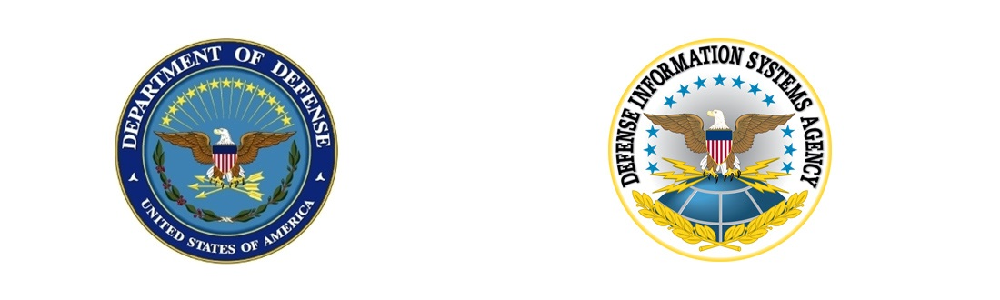

UNCLASSIFIED

Apple macOS 12 (Monterey) Security Technical Implementation Guide
Version: 1
Release: 5
26 Jan 2023
XSL Release 1/25/2022 Sort by: STIGID
Description: This Security Technical Implementation Guide is published as a tool to improve the security of Department of Defense (DoD) information systems. The requirements are derived from the National Institute of Standards and Technology (NIST) 800-53 and related documents. Comments or proposed revisions to this document should be sent via email to the following address: disa.stig_spt@mail.mil.
Group ID (Vulid): V-252436
Group Title: SRG-OS-000028-GPOS-00009
Rule ID: SV-252436r816122_rule
Severity: CAT II
Rule Version (STIG-ID): APPL-12-000001
Rule Title: The macOS system must be configured to prevent Apple Watch from terminating a session lock.
Vulnerability Discussion: Users must be prompted to enter their passwords when unlocking the screen saver. The screen saver acts as a session lock and prevents unauthorized users from accessing the current user's account.
Check Content:
To check if the system is configured to prevent Apple Watch from terminating a session lock, run the following command:
/usr/sbin/system_profiler SPConfigurationProfileDataType | /usr/bin/grep "allowAutoUnlock"
allowAutoUnlock = 0;
If there is no result or "allowAutoUnlock" is not set to "0", this is a finding.
Fix Text: This setting is enforced using the “Restrictions Policy" configuration profile.
CCI: CCI-000056
Group ID (Vulid): V-252437
Group Title: SRG-OS-000028-GPOS-00009
Rule ID: SV-252437r816125_rule
Severity: CAT II
Rule Version (STIG-ID): APPL-12-000002
Rule Title: The macOS system must retain the session lock until the user reestablishes access using established identification and authentication procedures.
Vulnerability Discussion: Users must be prompted to enter their passwords when unlocking the screen saver. The screen saver acts as a session lock and prevents unauthorized users from accessing the current user's account.
Check Content:
To check if the system will prompt users to enter their passwords to unlock the screen saver, run the following command:
/usr/sbin/system_profiler SPConfigurationProfileDataType | /usr/bin/grep askForPassword
If there is no result, or if "askForPassword" is not set to "1", this is a finding.
Fix Text: This setting is enforced using the "Login Window Policy" configuration profile.
CCI: CCI-000056
Group ID (Vulid): V-252438
Group Title: SRG-OS-000028-GPOS-00009
Rule ID: SV-252438r877365_rule
Severity: CAT II
Rule Version (STIG-ID): APPL-12-000003
Rule Title: The macOS system must initiate the session lock no more than five seconds after a screen saver is started.
Vulnerability Discussion: A screen saver must be enabled and set to require a password to unlock. An excessive grace period impacts the ability for a session to be truly locked, requiring authentication to unlock.
Check Content:
To check if the system will prompt users to enter their passwords to unlock the screen saver, run the following command:
/usr/sbin/system_profiler SPConfigurationProfileDataType | /usr/bin/grep askForPasswordDelay
If there is no result, or if "askForPasswordDelay" is not set to "5" or less, this is a finding.
Fix Text: This setting is enforced using the "Login Window Policy" configuration profile.
CCI: CCI-000056
Group ID (Vulid): V-252439
Group Title: SRG-OS-000029-GPOS-00010
Rule ID: SV-252439r816131_rule
Severity: CAT II
Rule Version (STIG-ID): APPL-12-000004
Rule Title: The macOS system must initiate a session lock after a 15-minute period of inactivity.
Vulnerability Discussion: A screen saver must be enabled and set to require a password to unlock. The timeout should be set to 15 minutes of inactivity. This mitigates the risk that a user might forget to manually lock the screen before stepping away from the computer.
A session time-out lock is a temporary action taken when a user stops work and moves away from the immediate physical vicinity of the information system but does not log out because of the temporary nature of the absence. Rather than relying on the user to manually lock their operating system session prior to vacating the vicinity, operating systems need to be able to identify when a user's session has idled and take action to initiate the session lock.
Check Content:
To check if the system has a configuration profile configured to enable the screen saver after a time-out period, run the following command:
/usr/sbin/system_profiler SPConfigurationProfileDataType | /usr/bin/grep loginWindowIdleTime
If there is no result, or if "loginWindowIdleTime" is not set to "900" seconds or less, this is a finding.
Fix Text: This setting is enforced using the "Login Window Policy" configuration profile.
CCI: CCI-000057
Group ID (Vulid): V-252440
Group Title: SRG-OS-000030-GPOS-00011
Rule ID: SV-252440r816134_rule
Severity: CAT II
Rule Version (STIG-ID): APPL-12-000005
Rule Title: The macOS system must be configured to lock the user session when a smart token is removed.
Vulnerability Discussion: A session lock is a temporary action taken when a user stops work and moves away from the immediate physical vicinity of the information system but does not want to log out because of the temporary nature of the absence.
The session lock is implemented at the point where session activity can be determined. Rather than be forced to wait for a period of time to expire before the user session can be locked, operating systems need to provide users with the ability to manually invoke a session lock so users may secure their session should they need to temporarily vacate the immediate physical vicinity.
Check Content:
To check if support for session locking with removal of a token is enabled, run the following command:
/usr/sbin/system_profiler SPConfigurationProfileDataType | /usr/bin/grep "tokenRemovalAction = 1;"
If there is no result, this is a finding.
Fix Text: This setting is enforced using the "Smart Card Policy" configuration profile.
Note: Before applying the "Smart Card Policy", the supplemental guidance provided with the STIG should be consulted to ensure continued access to the operating system.
CCI: CCI-000058
Group ID (Vulid): V-252441
Group Title: SRG-OS-000031-GPOS-00012
Rule ID: SV-252441r816137_rule
Severity: CAT III
Rule Version (STIG-ID): APPL-12-000006
Rule Title: The macOS system must conceal, via the session lock, information previously visible on the display with a publicly viewable image.
Vulnerability Discussion: A default screen saver must be configured for all users, as the screen saver will act as a session time-out lock for the system and must conceal the contents of the screen from unauthorized users. The screen saver must not display any sensitive information or reveal the contents of the locked session screen. Publicly viewable images can include static or dynamic images such as patterns used with screen savers, photographic images, solid colors, a clock, a battery life indicator, or a blank screen.
Check Content:
To view the currently selected screen saver for the logged-on user, run the following command:
/usr/sbin/system_profiler SPConfigurationProfileDataType | /usr/bin/grep loginWindowModulePath
If there is no result or defined "modulePath", this is a finding.
Fix Text: This setting is enforced using the "Login Window Policy" configuration profile.
CCI: CCI-000060
Group ID (Vulid): V-252442
Group Title: SRG-OS-000031-GPOS-00012
Rule ID: SV-252442r816140_rule
Severity: CAT II
Rule Version (STIG-ID): APPL-12-000007
Rule Title: The macOS system must be configured to disable hot corners.
Vulnerability Discussion: Although hot corners can be used to initiate a session lock or launch useful applications, they can also be configured to disable an automatic session lock from initiating. Such a configuration introduces the risk that a user might forget to manually lock the screen before stepping away from the computer.
Check Content:
To check if the system is configured to disable hot corners, run the following commands:
/usr/sbin/system_profiler SPConfigurationProfileDataType | /usr/bin/grep wvous
If the return is null, or does not equal:
"wvous-bl-corner = 0
wvous-br-corner = 0;
wvous-tl-corner = 0;
wvous-tr-corner = 0;"
this is a finding.
Fix Text: This setting is enforced using the "Custom Policy" configuration profile.
CCI: CCI-000060
Group ID (Vulid): V-252443
Group Title: SRG-OS-000250-GPOS-00093
Rule ID: SV-252443r877394_rule
Severity: CAT II
Rule Version (STIG-ID): APPL-12-000011
Rule Title: The macOS system must disable the SSHD service.
Vulnerability Discussion: Without confidentiality and integrity protection mechanisms, unauthorized individuals may gain access to sensitive information via a remote access session.
Remote access is access to DoD non-public information systems by an authorized user (or an information system) communicating through an external, non-organization-controlled network. Remote access methods include, for example, dial-up, broadband, and wireless.
Encryption provides a means to secure the remote connection to prevent unauthorized access to the data traversing the remote access connection (e.g., Remote Desktop Protocol [RDP]), thereby providing a degree of confidentiality. The encryption strength of a mechanism is selected based on the security categorization of the information.
Privileged access contains control and configuration information and is particularly sensitive, so additional protections are necessary. This is maintained by using cryptographic mechanisms, such as a hash function or digital signature, to protect integrity.
Nonlocal maintenance and diagnostic activities are those activities conducted by individuals communicating through a network, either an external network (e.g., the Internet) or an internal network.
Use of weak or untested encryption algorithms undermines the purposes of using encryption to protect data. The operating system must implement cryptographic modules adhering to the higher standards approved by the federal government since this provides assurance they have been tested and validated.
The implementation of OpenSSH that is included with macOS does not utilize a FIPS 140-2 validated cryptographic module.
Satisfies: SRG-OS-000250-GPOS-00093, SRG-OS-000033-GPOS-00014, SRG-OS-000319-GPOS-00164, SRG-OS-000393-GPOS-00173, SRG-OS-000394-GPOS-00174, SRG-OS-000112-GPOS-00057, SRG-OS-000113-GPOS-00058, SRG-OS-000423-GPOS-00187, SRG-OS-000424-GPOS-00188, SRG-OS-000425-GPOS-00189, SRG-OS-000426-GPOS-00190
Check Content:
Verify the "SSHD" service is disabled by using the following command:
/bin/launchctl print-disabled system | grep sshd
If the results do not show "com.openssh.sshd => true", this is a finding.
Fix Text: Disable the "SSHD" service by using the following command:
/usr/bin/sudo /bin/launchctl disable system/com.openssh.sshd
The system may need to be restarted for the update to take effect.
CCI: CCI-000068
CCI: CCI-001453
CCI: CCI-001941
CCI: CCI-001942
CCI: CCI-001967
CCI: CCI-002418
CCI: CCI-002420
CCI: CCI-002421
CCI: CCI-002422
CCI: CCI-002890
CCI: CCI-003123
Group ID (Vulid): V-252444
Group Title: SRG-OS-000002-GPOS-00002
Rule ID: SV-252444r816146_rule
Severity: CAT II
Rule Version (STIG-ID): APPL-12-000012
Rule Title: The macOS system must automatically remove or disable temporary and emergency user accounts after 72 hours.
Vulnerability Discussion: If temporary user accounts remain active when no longer needed or for an excessive period, these accounts may be targeted by attackers to gain unauthorized access. To mitigate this risk, automated termination of all temporary accounts must be set upon account creation.
Temporary accounts are established as part of normal account activation procedures when there is a need for short-term accounts without the demand for immediacy in account activation.
If temporary accounts are used, the operating system must be configured to automatically terminate these types of accounts after a DoD-defined time period of 72 hours.
Emergency administrator accounts are privileged accounts established in response to crisis situations where the need for rapid account activation is required. Therefore, emergency account activation may bypass normal account authorization processes. If these accounts are automatically disabled, system maintenance during emergencies may not be possible, thus adversely affecting system availability.
Emergency administrator accounts are different from infrequently used accounts (i.e., local logon accounts used by system administrators when network or normal logon/access is not available). Infrequently used accounts also remain available and are not subject to automatic termination dates. However, an emergency administrator account is normally a different account created for use by vendors or system maintainers.
To address access requirements, many operating systems may be integrated with enterprise-level authentication/access mechanisms that meet or exceed access control policy requirements.
Satisfies: SRG-OS-000002-GPOS-00002, SRG-OS-000123-GPOS-00064
Check Content:
Verify if a password policy is enforced by a directory service by asking the System Administrator (SA) or Information System Security Officer (ISSO).
If no policy is enforced by a directory service, a password policy can be set with the "pwpolicy" utility. The variable names may vary depending on how the policy was set.
If there are no temporary or emergency accounts defined on the system, this is Not Applicable.
To check if the password policy is configured to disable a temporary or emergency account after 72 hours, run the following command to output the password policy to the screen, substituting the correct user name in place of username:
/usr/bin/sudo /usr/bin/pwpolicy -u username getaccountpolicies | tail -n +2
If there is no output, and password policy is not controlled by a directory service, this is a finding.
Otherwise, look for the line "<key>policyCategoryAuthentication</key>".
In the array that follows, there should be a <dict> section that contains a check <string> that allows users to log in if "policyAttributeCurrentTime" is less than the result of adding "policyAttributeCreationTime" to 72 hours (259299 seconds). The check might use a variable defined in its "policyParameters" section.
If the check does not exist or if the check adds too great an amount of time to "policyAttributeCreationTime", this is a finding.
Fix Text: This setting may be enforced using local policy or by a directory service.
To set local policy to disable a temporary or emergency user, create a plain text file containing the following:
<dict>
<key>policyCategoryAuthentication</key>
<array>
<dict>
<key>policyContent</key>
<string>policyAttributeCurrentTime < policyAttributeCreationTime+259299</string>
<key>policyIdentifier</key>
<string>Disable Tmp Accounts </string>
</dict>
</array>
</dict>
After saving the file and exiting to the command prompt, run the following command to load the new policy file, substituting the correct user name in place of "username" and the path to the file in place of "/path/to/file".
/usr/bin/sudo /usr/bin/pwpolicy -u username setaccountpolicies /path/to/file
CCI: CCI-001682
CCI: CCI-000016
Group ID (Vulid): V-252445
Group Title: SRG-OS-000355-GPOS-00143
Rule ID: SV-252445r877038_rule
Severity: CAT II
Rule Version (STIG-ID): APPL-12-000014
Rule Title: The macOS system must, for networked systems, compare internal information system clocks at least every 24 hours with a server that is synchronized to one of the redundant United States Naval Observatory (USNO) time servers or a time server designated for the appropriate DoD network (NIPRNet/SIPRNet) and/or the Global Positioning System (GPS).
Vulnerability Discussion: Inaccurate time stamps make it more difficult to correlate events and can lead to an inaccurate analysis. Determining the correct time a particular event occurred on a system is critical when conducting forensic analysis and investigating system events. Sources outside of the configured acceptable allowance (drift) may be inaccurate.
Synchronizing internal information system clocks provides uniformity of time stamps for information systems with multiple system clocks and systems connected over a network.
Organizations should consider endpoints that may not have regular access to the authoritative time server (e.g., mobile, teleworking, and tactical endpoints).
Satisfies: SRG-OS-000355-GPOS-00143, SRG-OS-000356-GPOS-00144
Check Content:
The TIMED (NTP replacement in Big Sur) service must be enabled on all networked systems. To check if the service is running, use the following command:
sudo systemsetup -getusingnetworktime
If the following in not returned, this is a finding:
Network Time: On
To verify that an authorized Time Server is configured, run the following command:
sudo systemsetup -getnetworktimeserver
Only approved time servers should be configured for use.
If no server is configured, or if an unapproved time server is in use, this is a finding.
Fix Text: To enable the TIMED service, run the following command:
/usr/bin/sudo systemsetup -setusingnetworktime on
To configure a time server, use the following command:
/usr/bin/sudo systemsetup -setnetworktimeserver "server"
CCI: CCI-002046
CCI: CCI-001891
Group ID (Vulid): V-252446
Group Title: SRG-OS-000191-GPOS-00080
Rule ID: SV-252446r816152_rule
Severity: CAT II
Rule Version (STIG-ID): APPL-12-000015
Rule Title: The macOS system must utilize an ESS solution and implement all DoD required modules.
Vulnerability Discussion: The macOS system must employ automated mechanisms to determine the state of system components. The DoD requires the installation and use of an approved HBSS solution to be implemented on the operating system. For additional information, reference all applicable HBSS OPORDs and FRAGOs on SIPRNET.
Check Content:
Verify that there is an approved ESS solution installed on the system.
If there is not an approved ESS solution installed, this is a finding.
Verify that all installed components of the ESS Solution are at the DoD approved minimal version.
If the installed components are not at the DoD approved minimal versions, this is a finding.
Fix Text: Install an approved ESS solution onto the system and ensure that all components are at least updated to their DoD approved minimal versions.
CCI: CCI-001233
Group ID (Vulid): V-252447
Group Title: SRG-OS-000480-GPOS-00227
Rule ID: SV-252447r816155_rule
Severity: CAT I
Rule Version (STIG-ID): APPL-12-000016
Rule Title: The macOS system must be integrated into a directory services infrastructure.
Vulnerability Discussion: Distinct user account databases on each separate system cause problems with username and password policy enforcement. Most approved directory services infrastructure solutions allow centralized management of users and passwords.
Check Content:
If the system is using a mandatory Smart Card Policy, this is Not Applicable.
To determine if the system is integrated to a directory service, run the following command:
/usr/bin/dscl localhost -list . | /usr/bin/grep "Active Directory"
If no results are returned, this is a finding.
Fix Text: Integrate the system into an existing directory services infrastructure.
CCI: CCI-000366
Group ID (Vulid): V-252448
Group Title: SRG-OS-000329-GPOS-00128
Rule ID: SV-252448r853260_rule
Severity: CAT II
Rule Version (STIG-ID): APPL-12-000022
Rule Title: The macOS system must enforce the limit of three consecutive invalid logon attempts by a user before the user account is locked.
Vulnerability Discussion: By limiting the number of failed logon attempts, the risk of unauthorized system access via user password guessing, otherwise known as brute forcing, is reduced. Limits are imposed by locking the account.
Check Content:
Password policy is set with the Passcode Policy configuration profile.
/usr/sbin/system_profiler SPConfigurationProfileDataType | /usr/bin/grep 'maxFailedAttempts\|minutesUntilFailedLoginReset'
If "maxFailedAttempts" is not set to "3" and "minutesUntilFailedLoginReset" is not set to "15", this is a finding.
Fix Text: This setting may be enforced using the "Passcode Policy" configuration profile or by a directory service.
CCI: CCI-002238
Group ID (Vulid): V-252449
Group Title: SRG-OS-000023-GPOS-00006
Rule ID: SV-252449r816161_rule
Severity: CAT II
Rule Version (STIG-ID): APPL-12-000023
Rule Title: The macOS system must display the Standard Mandatory DoD Notice and Consent Banner before granting remote access to the operating system.
Vulnerability Discussion: Display of a standardized and approved use notification before granting access to the operating system ensures privacy and security notification verbiage used is consistent with applicable federal laws, Executive Orders, directives, policies, regulations, standards, and guidance.
System use notifications are required only for access via logon interfaces with human users and are not required when such human interfaces do not exist.
The banner must be formatted in accordance with DTM-08-060.
Check Content:
Verify the operating system displays the Standard Mandatory DoD Notice and Consent Banner before granting access to the operating system.
Check to see if the operating system has the correct text listed in the "/etc/banner" file with the following command:
# more /etc/banner
The command should return the following text:
"You are accessing a U.S. Government (USG) Information System (IS) that is provided for USG-authorized use only.
By using this IS (which includes any device attached to this IS), you consent to the following conditions:
-The USG routinely intercepts and monitors communications on this IS for purposes including, but not limited to, penetration testing, COMSEC monitoring, network operations and defense, personnel misconduct (PM), law enforcement (LE), and counterintelligence (CI) investigations.
-At any time, the USG may inspect and seize data stored on this IS.
-Communications using, or data stored on, this IS are not private, are subject to routine monitoring, interception, and search, and may be disclosed or used for any USG-authorized purpose.
-This IS includes security measures (e.g., authentication and access controls) to protect USG interests--not for your personal benefit or privacy.
-Notwithstanding the above, using this IS does not constitute consent to PM, LE or CI investigative searching or monitoring of the content of privileged communications, or work product, related to personal representation or services by attorneys, psychotherapists, or clergy, and their assistants. Such communications and work product are private and confidential. See User Agreement for details."
If the operating system does not display a graphical logon banner or the banner does not match the Standard Mandatory DoD Notice and Consent Banner, this is a finding.
If the text in the "/etc/banner" file does not match the Standard Mandatory DoD Notice and Consent Banner, this is a finding.
Fix Text: Create a text file containing the required DoD text.
Name the file "banner" and place it in "/etc/".
CCI: CCI-000048
Group ID (Vulid): V-252450
Group Title: SRG-OS-000023-GPOS-00006
Rule ID: SV-252450r858503_rule
Severity: CAT II
Rule Version (STIG-ID): APPL-12-000024
Rule Title: The macOS system must display the Standard Mandatory DoD Notice and Consent Banner before granting access to the system via SSH.
Vulnerability Discussion: Display of a standardized and approved use notification before granting access to the operating system ensures privacy and security notification verbiage used is consistent with applicable federal laws, Executive Orders, directives, policies, regulations, standards, and guidance.
System use notifications are required only for access via logon interfaces with human users and are not required when such human interfaces do not exist.
The banner must be formatted in accordance with DTM-08-060.
Satisfies: SRG-OS-000023-GPOS-00006, SRG-OS-000024-GPOS-00007
Check Content:
If SSH is not being used, this is Not Applicable.
For systems that allow remote access through SSH, run the following command to verify that "/etc/banner" is displayed before granting access:
/usr/bin/grep -r Banner /etc/ssh/sshd_config*
Banner /etc/banner
If the sshd Banner configuration option does not point to "/etc/banner", this is a finding.
If conflicting results are returned, this is a finding.
Fix Text: For systems that allow remote access through SSH run the following command:
# /usr/bin/sudo /usr/bin/sed -i.bak 's/^#Banner.*/Banner \/etc\/banner/' /etc/ssh/sshd_config
CCI: CCI-000048
CCI: CCI-000050
Group ID (Vulid): V-252451
Group Title: SRG-OS-000023-GPOS-00006
Rule ID: SV-252451r816167_rule
Severity: CAT II
Rule Version (STIG-ID): APPL-12-000025
Rule Title: The macOS system must be configured so that any connection to the system must display the Standard Mandatory DoD Notice and Consent Banner before granting GUI access to the system.
Vulnerability Discussion: Display of a standardized and approved use notification before granting access to the operating system ensures privacy and security notification verbiage used is consistent with applicable federal laws, Executive Orders, directives, policies, regulations, standards, and guidance.
System use notifications are required only for access via logon interfaces with human users and are not required when such human interfaces do not exist.
The banner must be formatted in accordance with DTM-08-060.
Satisfies: SRG-OS-000023-GPOS-00006, SRG-OS-000024-GPOS-00007, SRG-OS-000228-GPOS-00088
Check Content:
The policy banner will show if a "PolicyBanner.rtf" or "PolicyBanner.rtfd" exists in the "/Library/Security" folder. Run this command to show the contents of that folder:
/bin/ls -l /Library/Security/PolicyBanner.rtf*
If neither "PolicyBanner.rtf" nor "PolicyBanner.rtfd" exists, this is a finding.
The banner text of the document MUST read:
"You are accessing a U.S. Government (USG) Information System (IS) that is provided for USG-authorized use only. By using this IS (which includes any device attached to this IS), you consent to the following conditions:
-The USG routinely intercepts and monitors communications on this IS for purposes including, but not limited to, penetration testing, COMSEC monitoring, network operations and defense, personnel misconduct (PM), law enforcement (LE), and counterintelligence (CI) investigations.
-At any time, the USG may inspect and seize data stored on this IS.
-Communications using, or data stored on, this IS are not private, are subject to routine monitoring, interception, and search, and may be disclosed or used for any USG authorized purpose.
-This IS includes security measures (e.g., authentication and access controls) to protect USG interests--not for your personal benefit or privacy.
-Notwithstanding the above, using this IS does not constitute consent to PM, LE or CI investigative searching or monitoring of the content of privileged communications, or work product, related to personal representation or services by attorneys, psychotherapists, or clergy, and their assistants. Such communications and work product are private and confidential. See User Agreement for details."
If the text is not worded exactly this way, this is a finding.
Fix Text: Create an RTF file containing the required text. Name the file "PolicyBanner.rtf" or "PolicyBanner.rtfd" and place it in "/Library/Security/".
CCI: CCI-000048
CCI: CCI-000050
CCI: CCI-001384
CCI: CCI-001385
CCI: CCI-001386
CCI: CCI-001387
CCI: CCI-001388
Group ID (Vulid): V-252452
Group Title: SRG-OS-000057-GPOS-00027
Rule ID: SV-252452r816170_rule
Severity: CAT II
Rule Version (STIG-ID): APPL-12-000030
Rule Title: The macOS system must be configured so that log files must not contain access control lists (ACLs).
Vulnerability Discussion: The audit service must be configured to create log files with the correct permissions to prevent normal users from reading audit logs. Audit logs contain sensitive data about the system and users. If log files are set to be readable and writable only by root or administrative users with sudo, the risk is mitigated.
Satisfies: SRG-OS-000057-GPOS-00027, SRG-OS-000206-GPOS-00084
Check Content:
To check if a log file contains ACLs, run the following commands:
/usr/bin/sudo ls -le $(/usr/bin/sudo /usr/bin/grep '^dir' /etc/security/audit_control | awk -F: '{print $2}') | /usr/bin/grep -v current
In the output from the above commands, ACLs will be listed under any file that may contain them (e.g., "0: group:admin allow list,readattr,reaadextattr,readsecurity").
If any such line exists, this is a finding.
Fix Text: For any log file that contains ACLs, run the following command:
/usr/bin/sudo chmod -N [audit log file]
CCI: CCI-001314
CCI: CCI-000162
Group ID (Vulid): V-252453
Group Title: SRG-OS-000057-GPOS-00027
Rule ID: SV-252453r816173_rule
Severity: CAT II
Rule Version (STIG-ID): APPL-12-000031
Rule Title: The macOS system must be configured so that log folders must not contain access control lists (ACLs).
Vulnerability Discussion: The audit service must be configured to create log folders with the correct permissions to prevent normal users from reading audit logs. Audit logs contain sensitive data about the system and users. If log folders are set to be readable and writable only by root or administrative users with sudo, the risk is mitigated.
Check Content:
To check if a log folder contains ACLs, run the following commands:
/usr/bin/sudo ls -lde $(/usr/bin/sudo /usr/bin/grep '^dir' /etc/security/audit_control | awk -F: '{print $2}')
In the output from the above commands, ACLs will be listed under any folder that may contain them (e.g., "0: group:admin allow list,readattr,reaadextattr,readsecurity").
If any such line exists, this is a finding.
Fix Text: For any log folder that contains ACLs, run the following command:
/usr/bin/sudo chmod -N [audit log folder]
CCI: CCI-000162
Group ID (Vulid): V-252454
Group Title: SRG-OS-000480-GPOS-00227
Rule ID: SV-252454r853262_rule
Severity: CAT II
Rule Version (STIG-ID): APPL-12-000032
Rule Title: The macOS system must be configured with dedicated user accounts to decrypt the hard disk upon startup.
Vulnerability Discussion: When "FileVault" and Multifactor Authentication are configured on the operating system, a dedicated user must be configured to ensure that the implemented Multifactor Authentication rules are enforced. If a dedicated user is not configured to decrypt the hard disk upon startup, the system will allow a user to bypass Multifactor Authentication rules during initial startup and first login.
Check Content:
For Apple Silicon-based systems, this is Not Applicable.
For Intel-based Macs, retrieve a list of authorized FileVault users:
$ sudo fdesetup list
fvuser,85F41F44-22B3-6CB7-85A1-BCC2EA2B887A
If any unauthorized users are listed, this is a finding.
Verify that the shell for authorized FileVault users is set to “/usr/bin/false”, which prevents console logins:
$ sudo dscl . read /Users/<FileVault_User> UserShell
UserShell: /usr/bin/false
If the FileVault users' shell is not set to "/usr/bin/false", this is a finding.
Fix Text: Note: In previous versions of macOS, this setting was implemented differently. Systems that used the previous method should prepare the system for the new method by creating a new unlock user, verifying its ability to unlock FileVault after reboot, then deleting the old FileVault unlock user.
Disable the login ability of the newly created user account:
$ sudo /usr/bin/dscl . change /Users/<FileVault_User> UserShell </path/to/current/shell> /usr/bin/false
Remove all FileVault login access from each user account defined on the system that is not a designated FileVault user:
$ sudo fdesetup remove -user <username>
CCI: CCI-002143
Group ID (Vulid): V-252455
Group Title: SRG-OS-000480-GPOS-00227
Rule ID: SV-252455r853263_rule
Severity: CAT II
Rule Version (STIG-ID): APPL-12-000033
Rule Title: The macOS system must be configured to disable password forwarding for FileVault2.
Vulnerability Discussion: When "FileVault" and Multifactor Authentication are configured on the operating system, a dedicated user must be configured to ensure that the implemented Multifactor Authentication rules are enforced. If a dedicated user is not configured to decrypt the hard disk upon startup, the system will allow a user to bypass Multifactor Authentication rules during initial startup and first login.
Check Content:
Verify that password forwarding has been disabled on the system:
# /usr/sbin/system_profiler SPConfigurationProfileDataType | /usr/bin/grep "DisableFDEAutoLogin"
DisableFDEAutologin = 1;
If "DisableFDEAutologin" is not set to a value of "1", this is a finding.
Fix Text: This setting is enforced using the "Smart Card" configuration profile.
CCI: CCI-002143
Group ID (Vulid): V-252456
Group Title: SRG-OS-000163-GPOS-00072
Rule ID: SV-252456r858505_rule
Severity: CAT II
Rule Version (STIG-ID): APPL-12-000051
Rule Title: The macOS system must be configured with the SSH daemon ClientAliveInterval option set to 900 or less.
Vulnerability Discussion: SSH should be configured to log users out after a 15-minute interval of inactivity and to wait only 30 seconds before timing out logon attempts. Terminating an idle session within a short time period reduces the window of opportunity for unauthorized personnel to take control of a management session enabled on the console or console port that has been left unattended. In addition, quickly terminating an idle session or an incomplete logon attempt will also free up resources committed by the managed network element.
Check Content:
If SSH is not being used, this is Not Applicable.
The SSH daemon "ClientAliveInterval" option must be set correctly. To check the idle timeout setting for SSH sessions, run the following:
/usr/bin/grep -r ^ClientAliveInterval /etc/ssh/sshd_config*
If the setting is not "900" or less, this is a finding.
If conflicting results are returned, this is a finding.
Fix Text: To ensure that "ClientAliveInterval" is set correctly, run the following command:
/usr/bin/sudo /usr/bin/sed -i.bak 's/.*ClientAliveInterval.*/ClientAliveInterval 900/' /etc/ssh/sshd_config
CCI: CCI-001133
Group ID (Vulid): V-252457
Group Title: SRG-OS-000163-GPOS-00072
Rule ID: SV-252457r858507_rule
Severity: CAT II
Rule Version (STIG-ID): APPL-12-000052
Rule Title: The macOS system must be configured with the SSH daemon ClientAliveCountMax option set to 0.
Vulnerability Discussion: SSH should be configured with an Active Client Alive Maximum Count of 0. Terminating an idle session within a short time period reduces the window of opportunity for unauthorized personnel to take control of a management session enabled on the console or console port that has been left unattended. In addition, quickly terminating an idle session or an incomplete logon attempt will also free up resources committed by the managed network element.
Check Content:
If SSH is not being used, this is Not Applicable.
The SSH daemon "ClientAliveCountMax" option must be set correctly. To verify the SSH idle timeout will occur when the "ClientAliveCountMax" is set, run the following command:
/usr/bin/grep -r ^ClientAliveCountMax /etc/ssh/sshd_config*
If the setting is not "ClientAliveCountMax 0", this is a finding.
If conflicting results are returned, this is a finding.
Fix Text: To ensure that the SSH idle timeout occurs precisely when the "ClientAliveCountMax" is set, run the following command:
/usr/bin/sudo /usr/bin/sed -i.bak 's/.*ClientAliveCountMax.*/ClientAliveCountMax 0/' /etc/ssh/sshd_config
CCI: CCI-001133
Group ID (Vulid): V-252458
Group Title: SRG-OS-000163-GPOS-00072
Rule ID: SV-252458r858509_rule
Severity: CAT II
Rule Version (STIG-ID): APPL-12-000053
Rule Title: The macOS system must be configured with the SSH daemon LoginGraceTime set to 30 or less.
Vulnerability Discussion: SSH should be configured to log users out after a 15-minute interval of inactivity and to wait only 30 seconds before timing out logon attempts. Terminating an idle session within a short time period reduces the window of opportunity for unauthorized personnel to take control of a management session enabled on the console or console port that has been left unattended. In addition, quickly terminating an idle session or an incomplete logon attempt will also free up resources committed by the managed network element.
Check Content:
If SSH is not being used, this is Not Applicable.
The SSH daemon "LoginGraceTime" must be set correctly. To check the amount of time that a user can log on through SSH, run the following command:
/usr/bin/grep -r ^LoginGraceTime /etc/ssh/sshd_config*
If the value is not set to "30" or less, this is a finding.
If conflicting results are returned, this is a finding.
Fix Text: To ensure that "LoginGraceTime" is configured correctly, run the following command:
/usr/bin/sudo /usr/bin/sed -i.bak 's/.*LoginGraceTime.*/LoginGraceTime 30/' /etc/ssh/sshd_config
CCI: CCI-001133
Group ID (Vulid): V-252459
Group Title: SRG-OS-000033-GPOS-00014
Rule ID: SV-252459r877398_rule
Severity: CAT II
Rule Version (STIG-ID): APPL-12-000054
Rule Title: The macOS system must implement approved ciphers to protect the confidentiality of SSH connections.
Vulnerability Discussion: Unapproved mechanisms for authentication to the cryptographic module are not verified, and therefore cannot be relied upon to provide confidentiality or integrity, resulting in the compromise of DoD data.
Operating systems using encryption are required to use FIPS-compliant mechanisms for authenticating to cryptographic modules.
The implementation of OpenSSH that is included with macOS does not use a FIPS 140-2 validated cryptographic module. While the listed ciphers are FIPS 140-2 approved algorithms, the module implementing them has not been validated.
By specifying a cipher list with the order of ciphers being in a "strongest to weakest" orientation, the system will automatically attempt to use the strongest cipher for securing SSH connections.
Satisfies: SRG-OS-000033-GPOS-00014, SRG-OS-000120-GPOS-00061, SRG-OS-000125-GPOS-00065, SRG-OS-000250-GPOS-00093, SRG-OS-000393-GPOS-00173, SRG-OS-000394-GPOS-00174
Check Content:
If SSH is not being used, this is Not Applicable.
Inspect the "Ciphers" configuration with the following command:
/usr/bin/sudo /usr/sbin/sshd -T | /usr/bin/grep "^ciphers"
ciphers aes256-ctr,aes192-ctr,aes128-ctr
If any ciphers other than "aes256-ctr", "aes192-ctr", or "aes128-ctr" are listed, the order differs from the example above, or the "Ciphers" keyword is missing, this is a finding.
Fix Text: Configure SSH to use secure cryptographic algorithms.
To ensure that "Ciphers" set correctly, run the following command:
/usr/bin/sudo /usr/bin/grep -q '^Ciphers' /etc/ssh/sshd_config && /usr/bin/sudo /usr/bin/sed -i.bak 's/^Ciphers.*/Ciphers aes256-ctr,aes192-ctr,aes128-ctr/' /etc/ssh/sshd_config || /usr/bin/sudo /usr/bin/sed -i.bak '/.*Ciphers and keying.*/a\'$'\nCiphers aes256-ctr,aes192-ctr,aes128-ctr'$'\n' /etc/ssh/sshd_config
The SSH service must be restarted for changes to take effect.
CCI: CCI-000803
CCI: CCI-000068
CCI: CCI-003123
CCI: CCI-002890
Group ID (Vulid): V-252460
Group Title: SRG-OS-000033-GPOS-00014
Rule ID: SV-252460r877398_rule
Severity: CAT II
Rule Version (STIG-ID): APPL-12-000055
Rule Title: The macOS system must use only Message Authentication Codes (MACs) employing FIPS 140-2 validated cryptographic hash algorithms.
Vulnerability Discussion: Unapproved mechanisms for authentication to the cryptographic module are not verified, and therefore cannot be relied upon to provide confidentiality or integrity, resulting in the compromise of DoD data.
Operating systems using encryption are required to use FIPS-compliant mechanisms for authenticating to cryptographic modules.
The implementation of OpenSSH that is included with macOS does not use a FIPS 140-2 validated cryptographic module. While the listed MACs are FIPS 140-2 approved algorithms, the module implementing them has not been validated.
By specifying a Keyed-Hash Message Authentication Code list with the order of hashes being in a "strongest to weakest" orientation, the system will automatically attempt to use the strongest hash for securing SSH connections.
Satisfies: SRG-OS-000033-GPOS-00014, SRG-OS-000120-GPOS-00061, SRG-OS-000125-GPOS-00065, SRG-OS-000250-GPOS-00093, SRG-OS-000393-GPOS-00173, SRG-OS-000394-GPOS-00174
Check Content:
If SSH is not being used, this is Not Applicable.
Inspect the "macs" configuration with the following command:
/usr/bin/sudo /usr/sbin/sshd -T | /usr/bin/grep "^macs"
macs hmac-sha2-512,hmac-sha2-256
If any hashes other than "hmac-sha2-512" and/or "hmac-sha2-256" are listed, the order differs from the example above, or the "macs" keyword is missing, this is a finding.
Fix Text: Configure SSH to use secure Keyed-Hash Message Authentication Codes.
To ensure that "MACs" set correctly, run the following command:
/usr/bin/sudo /usr/bin/grep -q '^MACs' /etc/ssh/sshd_config && /usr/bin/sudo /usr/bin/sed -i.bak 's/^MACs.*/MACs hmac-sha2-256,hmac-sha2-512/' /etc/ssh/sshd_config || /usr/bin/sudo /usr/bin/sed -i.bak '/.*Ciphers and keying.*/a\'$'\nMACs hmac-sha2-512,hmac-sha2-256'$'\n' /etc/ssh/sshd_config
The SSH service must be restarted for changes to take effect.
CCI: CCI-000068
CCI: CCI-000803
CCI: CCI-003123
CCI: CCI-002890
Group ID (Vulid): V-252461
Group Title: SRG-OS-000033-GPOS-00014
Rule ID: SV-252461r877398_rule
Severity: CAT II
Rule Version (STIG-ID): APPL-12-000056
Rule Title: The macOS system must implement an approved Key Exchange Algorithm.
Vulnerability Discussion: Unapproved mechanisms for authentication to the cryptographic module are not verified, and therefore cannot be relied upon to provide confidentiality or integrity, resulting in the compromise of DoD data.
Operating systems using encryption are required to use FIPS-compliant mechanisms for authenticating to cryptographic modules.
The implementation of OpenSSH that is included with macOS does not utilize a FIPS 140-2 validated cryptographic module. While the listed Key Exchange Algorithms are FIPS 140-2 approved, the module implementing them has not been validated.
By specifying a Key Exchange Algorithm list with the order of hashes being in a "strongest to weakest" orientation, the system will automatically attempt to use the strongest Key Exchange Algorithm for securing SSH connections.
Satisfies: SRG-OS-000033-GPOS-00014, SRG-OS-000120-GPOS-00061, SRG-OS-000125-GPOS-00065, SRG-OS-000250-GPOS-00093, SRG-OS-000393-GPOS-00173, SRG-OS-000394-GPOS-00174
Check Content:
If SSH is not being used, this is Not Applicable.
Inspect the "kexalgorithms" configuration with the following command:
/usr/bin/sudo /usr/sbin/sshd -T | /usr/bin/grep "^kexalgorithms"
kexalgorithms diffie-hellman-group-exchange-sha256
If any algorithm other than "diffie-hellman-group-exchange-sha256" is listed or the "kexalgorithms" keyword is missing, this is a finding.
Fix Text: Configure SSH to use a secure Key Exchange Algorithm.
To ensure that "KexAlgorithms" set correctly, run the following command:
/usr/bin/sudo /usr/bin/grep -q '^KexAlgorithms' /etc/ssh/sshd_config && /usr/bin/sudo /usr/bin/sed -i.bak 's/^KexAlgorithms.*/KexAlgorithms diffie-hellman-group-exchange-sha256/' /etc/ssh/sshd_config || /usr/bin/sudo /usr/bin/sed -i.bak '/.*Ciphers and keying.*/a\'$'\nKexAlgorithms diffie-hellman-group-exchange-sha256'$'\n' /etc/ssh/sshd_config
The SSH service must be restarted for changes to take effect.
CCI: CCI-000803
CCI: CCI-000068
CCI: CCI-002890
CCI: CCI-003123
Group ID (Vulid): V-252462
Group Title: SRG-OS-000004-GPOS-00004
Rule ID: SV-252462r853271_rule
Severity: CAT II
Rule Version (STIG-ID): APPL-12-001001
Rule Title: The macOS system must generate audit records for all account creations, modifications, disabling, and termination events; privileged activities or other system-level access; all kernel module load, unload, and restart actions; all program initiations; and organizationally defined events for all non-local maintenance and diagnostic sessions.
Vulnerability Discussion: Without generating audit records that are specific to the security and mission needs of the organization, it would be difficult to establish, correlate, and investigate the events relating to an incident or identify those responsible for one. Audit records can be generated from various components within the information system (e.g., module or policy filter). If events associated with nonlocal administrative access or diagnostic sessions are not logged, a major tool for assessing and investigating attacks would not be available.
This requirement addresses auditing-related issues associated with maintenance tools used specifically for diagnostic and repair actions on organizational information systems.
Nonlocal maintenance and diagnostic activities are those activities conducted by individuals communicating through a network, either an external network (e.g., the internet) or an internal network. Local maintenance and diagnostic activities are those activities carried out by individuals physically present at the information system or information system component and not communicating across a network connection.
This requirement applies to hardware/software diagnostic test equipment or tools. This requirement does not cover hardware/software components that may support information system maintenance, yet are a part of the system, for example, the software implementing "ping," "ls," "ipconfig," or the hardware and software implementing the monitoring port of an Ethernet switch.
Satisfies: SRG-OS-000004-GPOS-00004, SRG-OS-000239-GPOS-00089, SRG-OS-000240-GPOS-00090, SRG-OS-000241-GPOS-00091, SRG-OS-000327-GPOS-00127, SRG-OS-000392-GPOS-00172, SRG-OS-000471-GPOS-00215, SRG-OS-000471-GPOS-00216, SRG-OS-000476-GPOS-00221, SRG-OS-000477-GPOS-00222
Check Content:
To view the currently configured flags for the audit daemon, run the following command:
/usr/bin/sudo /usr/bin/grep ^flags /etc/security/audit_control
Administrative and Privileged access, including administrative use of the command line tools "kextload" and "kextunload" and changes to configuration settings are logged by way of the "ad" flag.
If "ad" is not listed in the result of the check, this is a finding.
Fix Text: To ensure the appropriate flags are enabled for auditing, run the following command:
/usr/bin/sudo /usr/bin/sed -i.bak '/^flags/ s/$/,ad/' /etc/security/audit_control; /usr/bin/sudo /usr/sbin/audit -s
A text editor may also be used to implement the required updates to the "/etc/security/audit_control" file.
CCI: CCI-000018
CCI: CCI-000172
CCI: CCI-001403
CCI: CCI-001404
CCI: CCI-001405
CCI: CCI-002884
CCI: CCI-002234
Group ID (Vulid): V-252463
Group Title: SRG-OS-000032-GPOS-00013
Rule ID: SV-252463r816463_rule
Severity: CAT II
Rule Version (STIG-ID): APPL-12-001002
Rule Title: The macOS system must monitor remote access methods and generate audit records when successful/unsuccessful attempts to access/modify privileges occur.
Vulnerability Discussion: Frequently, an attacker that successfully gains access to a system has only gained access to an account with limited privileges, such as a guest account or a service account. The attacker must attempt to change to another user account with normal or elevated privileges in order to proceed. Without generating audit records that are specific to the security and mission needs of the organization, it would be difficult to establish, correlate, and investigate the events relating to an incident or identify those responsible for one.
Audit records can be generated from various components within the information system (e.g., module or policy filter).
Satisfies: SRG-OS-000032-GPOS-00013, SRG-OS-000462-GPOS-00206
Check Content:
To view the currently configured flags for the audit daemon, run the following command:
/usr/bin/sudo /usr/bin/grep ^flags /etc/security/audit_control
Attempts to log in as another user are logged by way of the "lo" flag.
If "lo" is not listed in the result of the check, this is a finding.
Fix Text: To ensure the appropriate flags are enabled for auditing, run the following command:
/usr/bin/sudo sed -i.bak '/^flags/ s/$/,lo/' /etc/security/audit_control; /usr/bin/sudo /usr/sbin/audit -s
A text editor may also be used to implement the required updates to the "/etc/security/audit_control" file.
CCI: CCI-000172
CCI: CCI-000067
Group ID (Vulid): V-252464
Group Title: SRG-OS-000037-GPOS-00015
Rule ID: SV-252464r853272_rule
Severity: CAT II
Rule Version (STIG-ID): APPL-12-001003
Rule Title: The macOS system must initiate session audits at system startup, using internal clocks with time stamps for audit records that meet a minimum granularity of one second and can be mapped to Coordinated Universal Time (UTC) or Greenwich Mean Time (GMT), in order to generate audit records containing information to establish what type of events occurred, the identity of any individual or process associated with the event, including individual identities of group account users, establish where the events occurred, source of the event, and outcome of the events including all account enabling actions, full-text recording of privileged commands, and information about the use of encryption for access wireless access to and from the system.
Vulnerability Discussion: Without establishing what type of events occurred, when they occurred, and by whom it would be difficult to establish, correlate, and investigate the events leading up to an outage or attack.
Audit record content that may be necessary to satisfy this requirement includes, for example, time stamps, source and destination addresses, user/process identifiers, event descriptions, success/fail indications, filenames involved, and access control or flow control rules invoked.
Associating event types with detected events in the operating system audit logs provides a means of investigating an attack, recognizing resource utilization or capacity thresholds, or identifying an improperly configured operating system.
Satisfies: SRG-OS-000037-GPOS-00015, SRG-OS-000038-GPOS-00016, SRG-OS-000039-GPOS-00017, SRG-OS-000040-GPOS-00018, SRG-OS-000041-GPOS-00019, SRG-OS-000042-GPOS-00020, SRG-OS-000042-GPOS-00021, SRG-OS-000055-GPOS-00026, SRG-OS-000254-GPOS-00095, SRG-OS-000255-GPOS-00096, SRG-OS-000303-GPOS-00120, SRG-OS-000337-GPOS-00129, SRG-OS-000358-GPOS-00145, SRG-OS-000359-GPOS-00146
Check Content:
To check if the audit service is running, use the following command:
launchctl print-disabled system| grep auditd
If the return is not:
"com.apple.auditd" => false"
the audit service is disabled, and this is a finding.
Fix Text: To enable the audit service, run the following command:
/usr/bin/sudo /bin/launchctl enable system/com.apple.auditd
The system may need to be restarted for the update to take effect.
CCI: CCI-000159
CCI: CCI-000130
CCI: CCI-000131
CCI: CCI-000132
CCI: CCI-000133
CCI: CCI-000134
CCI: CCI-000135
CCI: CCI-001464
CCI: CCI-001487
CCI: CCI-002130
CCI: CCI-001914
CCI: CCI-001889
CCI: CCI-001890
Group ID (Vulid): V-252465
Group Title: SRG-OS-000047-GPOS-00023
Rule ID: SV-252465r816466_rule
Severity: CAT II
Rule Version (STIG-ID): APPL-12-001010
Rule Title: The macOS system must shut down by default upon audit failure (unless availability is an overriding concern).
Vulnerability Discussion: The audit service should shut down the computer if it is unable to audit system events. Once audit failure occurs, user and system activity is no longer recorded and malicious activity could go undetected. Audit processing failures include software/hardware errors, failures in the audit capturing mechanisms, and audit storage capacity being reached or exceeded. Responses to audit failure depend on the nature of the failure mode.
When availability is an overriding concern, other approved actions in response to an audit failure are as follows:
(i) If the failure was caused by the lack of audit record storage capacity, the operating system must continue generating audit records if possible (automatically restarting the audit service if necessary), overwriting the oldest audit records in a first-in-first-out manner.
(ii) If audit records are sent to a centralized collection server and communication with this server is lost or the server fails, the operating system must queue audit records locally until communication is restored or until the audit records are retrieved manually. Upon restoration of the connection to the centralized collection server, action should be taken to synchronize the local audit data with the collection server.
Check Content:
Verify that the audit control system is configured to shut down upon failure using the following command:
sudo /usr/bin/grep ^policy /etc/security/audit_control | /usr/bin/grep ahlt
If there is no result, this is a finding.
Fix Text: Edit the "/etc/security/audit_control file" and change the value for policy to include the setting "ahlt". To do this programmatically, run the following command:
sudo /usr/bin/sed -i.bak '/^policy/ s/$/,ahlt/' /etc/security/audit_control; sudo /usr/sbin/audit -s
CCI: CCI-000140
Group ID (Vulid): V-252466
Group Title: SRG-OS-000057-GPOS-00027
Rule ID: SV-252466r816212_rule
Severity: CAT II
Rule Version (STIG-ID): APPL-12-001012
Rule Title: The macOS system must be configured with audit log files owned by root.
Vulnerability Discussion: The audit service must be configured to create log files with the correct ownership to prevent normal users from reading audit logs. Audit logs contain sensitive data about the system and users. If log files are set to only be readable and writable by root or administrative users with sudo, the risk is mitigated.
Check Content:
To check the ownership of the audit log files, run the following command:
/usr/bin/sudo ls -le $(/usr/bin/sudo /usr/bin/grep '^dir' /etc/security/audit_control | awk -F: '{print $2}') | grep -v current
The results should show the owner (third column) to be "root".
If they do not, this is a finding.
Fix Text: For any log file that returns an incorrect owner, run the following command:
/usr/bin/sudo chown root [audit log file]
[audit log file] is the full path to the log file in question.
CCI: CCI-000162
Group ID (Vulid): V-252467
Group Title: SRG-OS-000057-GPOS-00027
Rule ID: SV-252467r816215_rule
Severity: CAT II
Rule Version (STIG-ID): APPL-12-001013
Rule Title: The macOS system must be configured with audit log folders owned by root.
Vulnerability Discussion: The audit service must be configured to create log files with the correct ownership to prevent normal users from reading audit logs. Audit logs contain sensitive data about the system and about users. If log files are set to be readable and writable only by root or administrative users with sudo, the risk is mitigated.
Check Content:
To check the ownership of the audit log folder, run the following command:
/usr/bin/sudo ls -lde $(/usr/bin/sudo /usr/bin/grep '^dir' /etc/security/audit_control | awk -F: '{print $2}')
The results should show the owner (third column) to be "root".
If it does not, this is a finding.
Fix Text: For any log folder that has an incorrect owner, run the following command:
/usr/bin/sudo chown root [audit log folder]
CCI: CCI-000162
Group ID (Vulid): V-252468
Group Title: SRG-OS-000057-GPOS-00027
Rule ID: SV-252468r816218_rule
Severity: CAT II
Rule Version (STIG-ID): APPL-12-001014
Rule Title: The macOS system must be configured with audit log files group-owned by wheel.
Vulnerability Discussion: The audit service must be configured to create log files with the correct group ownership to prevent normal users from reading audit logs. Audit logs contain sensitive data about the system and users. If log files are set to be readable and writable only by root or administrative users with sudo, the risk is mitigated.
Check Content:
To check the group ownership of the audit log files, run the following command:
/usr/bin/sudo ls -le $(/usr/bin/sudo /usr/bin/grep '^dir' /etc/security/audit_control | awk -F: '{print $2}') | /usr/bin/grep -v current
The results should show the group owner (fourth column) to be "wheel".
If they do not, this is a finding.
Fix Text: For any log file that returns an incorrect group owner, run the following command:
/usr/bin/sudo chgrp wheel [audit log file]
[audit log file] is the full path to the log file in question.
CCI: CCI-000162
Group ID (Vulid): V-252469
Group Title: SRG-OS-000057-GPOS-00027
Rule ID: SV-252469r816221_rule
Severity: CAT II
Rule Version (STIG-ID): APPL-12-001015
Rule Title: The macOS system must be configured with audit log folders group-owned by wheel.
Vulnerability Discussion: The audit service must be configured to create log files with the correct group ownership to prevent normal users from reading audit logs. Audit logs contain sensitive data about the system and about users. If log files are set to be readable and writable only by root or administrative users with sudo, the risk is mitigated.
Check Content:
To check the group ownership of the audit log folder, run the following command:
/usr/bin/sudo ls -lde $(/usr/bin/sudo /usr/bin/grep '^dir' /etc/security/audit_control | awk -F: '{print $2}')
The results should show the group (fourth column) to be "wheel".
If they do not, this is a finding.
Fix Text: For any log folder that has an incorrect group, run the following command:
/usr/bin/sudo chgrp wheel [audit log folder]
CCI: CCI-000162
Group ID (Vulid): V-252470
Group Title: SRG-OS-000057-GPOS-00027
Rule ID: SV-252470r816224_rule
Severity: CAT II
Rule Version (STIG-ID): APPL-12-001016
Rule Title: The macOS system must be configured with audit log files set to mode 440 or less permissive.
Vulnerability Discussion: The audit service must be configured to create log files with the correct permissions to prevent normal users from reading audit logs. Audit logs contain sensitive data about the system and about users. If log files are set to be readable and writable only by root or administrative users with sudo, the risk is mitigated.
Check Content:
To check the permissions of the audit log files, run the following command:
/usr/bin/sudo ls -le $(/usr/bin/sudo /usr/bin/grep '^dir' /etc/security/audit_control | awk -F: '{print $2}') | /usr/bin/grep -v current
The results should show the permissions (first column) to be "440" or less permissive.
If they do not, this is a finding.
Fix Text: For any log file that returns an incorrect permission value, run the following command:
/usr/bin/sudo chmod 440 [audit log file]
[audit log file] is the full path to the log file in question.
CCI: CCI-000162
Group ID (Vulid): V-252471
Group Title: SRG-OS-000057-GPOS-00027
Rule ID: SV-252471r816227_rule
Severity: CAT II
Rule Version (STIG-ID): APPL-12-001017
Rule Title: The macOS system must be configured with audit log folders set to mode 700 or less permissive.
Vulnerability Discussion: The audit service must be configured to create log folders with the correct permissions to prevent normal users from reading audit logs. Audit logs contain sensitive data about the system and users. If log folders are set to be readable and writable only by root or administrative users with sudo, the risk is mitigated.
Satisfies: SRG-OS-000057-GPOS-00027, SRG-OS-000058-GPOS-00028, SRG-OS-000059-GPOS-00029
Check Content:
To check the permissions of the audit log folder, run the following command:
/usr/bin/sudo ls -lde $(/usr/bin/sudo /usr/bin/grep '^dir' /etc/security/audit_control | awk -F: '{print $2}')
The results should show the permissions (first column) to be "700" or less permissive.
If they do not, this is a finding.
Fix Text: For any log folder that returns an incorrect permission value, run the following command:
/usr/bin/sudo chmod 700 [audit log folder]
CCI: CCI-000162
CCI: CCI-000163
CCI: CCI-000164
Group ID (Vulid): V-252472
Group Title: SRG-OS-000064-GPOS-00033
Rule ID: SV-252472r853274_rule
Severity: CAT II
Rule Version (STIG-ID): APPL-12-001020
Rule Title: The macOS system must audit the enforcement actions used to restrict access associated with changes to the system.
Vulnerability Discussion: By auditing access restriction enforcement, changes to application and OS configuration files can be audited. Without auditing the enforcement of access restrictions, it will be difficult to identify attempted attacks and an audit trail will not be available for forensic investigation.
Enforcement actions are the methods or mechanisms used to prevent unauthorized changes to configuration settings. Enforcement action methods may be as simple as denying access to a file based on the application of file permissions (access restriction). Audit items may consist of lists of actions blocked by access restrictions or changes identified after the fact.
Without generating audit records that are specific to the security and mission needs of the organization, it would be difficult to establish, correlate, and investigate the events relating to an incident or identify those responsible for one.
Audit records can be generated from various components within the information system (e.g., module or policy filter).
Satisfies: SRG-OS-000064-GPOS-00033, SRG-OS-000365-GPOS-00152, SRG-OS-000458-GPOS-00203, SRG-OS-000461-GPOS-00205, SRG-OS-000463-GPOS-00207, SRG-OS-000465-GPOS-00209, SRG-OS-000466-GPOS-00210, SRG-OS-000467-GPOS-00211, SRG-OS-000468-GPOS-00212, SRG-OS-000474-GPOS-00219
Check Content:
To view the currently configured flags for the audit daemon, run the following command:
/usr/bin/sudo /usr/bin/grep ^flags /etc/security/audit_control
Enforcement actions are logged by way of the "fm" flag, which audits permission changes, and "-fr" and "-fw", which denote failed attempts to read or write to a file, and -fd, which audits failed file deletion.
If "fm", "-fr", "-fw", and "-fd" are not listed in the result of the check, this is a finding.
Fix Text: To set the audit flags to the recommended setting, run the following command to add the flags "fm", "-fr", "-fw", and "-fd" all at once:
/usr/bin/sudo /usr/bin/sed -i.bak '/^flags/ s/$/,fm,-fr,-fw,-fd/' /etc/security/audit_control; /usr/bin/sudo /usr/sbin/audit -s
A text editor may also be used to implement the required updates to the "/etc/security/audit_control" file.
CCI: CCI-000172
CCI: CCI-001814
Group ID (Vulid): V-252473
Group Title: SRG-OS-000341-GPOS-00132
Rule ID: SV-252473r877391_rule
Severity: CAT II
Rule Version (STIG-ID): APPL-12-001029
Rule Title: The macOS system must allocate audit record storage capacity to store at least one week's worth of audit records when audit records are not immediately sent to a central audit record storage facility.
Vulnerability Discussion: The audit service must be configured to require that records are kept for seven days or longer before deletion when there is no central audit record storage facility. When "expire-after" is set to "7d", the audit service will not delete audit logs until the log data is at least seven days old.
Check Content:
The check displays the amount of time the audit system is configured to retain audit log files. The audit system will not delete logs until the specified condition has been met. To view the current setting, run the following command:
/usr/bin/sudo /usr/bin/grep ^expire-after /etc/security/audit_control
If this returns no results, or does not contain "7d" or a larger value, this is a finding.
Fix Text: Edit the "/etc/security/audit_control" file and change the value for "expire-after" to the amount of time audit logs should be kept for the system. Use the following command to set the "expire-after" value to "7d":
/usr/bin/sudo /usr/bin/sed -i.bak 's/.*expire-after.*/expire-after:7d/' /etc/security/audit_control; /usr/bin/sudo /usr/sbin/audit -s
A text editor may also be used to implement the required updates to the "/etc/security/audit_control" file.
CCI: CCI-001849
Group ID (Vulid): V-252474
Group Title: SRG-OS-000343-GPOS-00134
Rule ID: SV-252474r877389_rule
Severity: CAT II
Rule Version (STIG-ID): APPL-12-001030
Rule Title: The macOS system must provide an immediate warning to the System Administrator (SA) and Information System Security Officer (ISSO) (at a minimum) when allocated audit record storage volume reaches 75 percent of repository maximum audit record storage capacity.
Vulnerability Discussion: The audit service must be configured to require a minimum percentage of free disk space in order to run. This ensures that audit will notify the administrator that action is required to free up more disk space for audit logs.
When "minfree" is set to 25 percent, security personnel are notified immediately when the storage volume is 75 percent full and are able to plan for audit record storage capacity expansion.
Check Content:
The check displays the "% free" to leave available for the system. The audit system will not write logs if the volume has less than this percentage of free disk space. To view the current setting, run the following command:
/usr/bin/sudo /usr/bin/grep ^minfree /etc/security/audit_control
If this returns no results, or does not contain "25", this is a finding.
Fix Text: Edit the "/etc/security/audit_control" file and change the value for "minfree" to "25" using the following command:
/usr/bin/sudo /usr/bin/sed -i.bak 's/.*minfree.*/minfree:25/' /etc/security/audit_control; /usr/bin/sudo /usr/sbin/audit -s
A text editor may also be used to implement the required updates to the "/etc/security/audit_control file".
CCI: CCI-001855
Group ID (Vulid): V-252475
Group Title: SRG-OS-000344-GPOS-00135
Rule ID: SV-252475r853279_rule
Severity: CAT II
Rule Version (STIG-ID): APPL-12-001031
Rule Title: The macOS system must provide an immediate real-time alert to the System Administrator (SA) and Information System Security Officer (ISSO), at a minimum, of all audit failure events requiring real-time alerts.
Vulnerability Discussion: The audit service should be configured to immediately print messages to the console or email administrator users when an auditing failure occurs. It is critical for the appropriate personnel to be aware if a system is at risk of failing to process audit logs as required. Without a real-time alert, security personnel may be unaware of an impending failure of the audit capability and system operation may be adversely affected.
Check Content:
By default, "auditd" only logs errors to "syslog". To see if audit has been configured to print error messages to the console, run the following command:
/usr/bin/sudo /usr/bin/grep logger /etc/security/audit_warn
If the argument "-s" is missing, or if "audit_warn" has not been otherwise modified to print errors to the console or send email alerts to the SA and ISSO, this is a finding.
Fix Text: To make "auditd" log errors to standard error as well as "syslogd", run the following command:
/usr/bin/sudo /usr/bin/sed -i.bak 's/logger -p/logger -s -p/' /etc/security/audit_warn; /usr/bin/sudo /usr/sbin/audit -s
CCI: CCI-001858
Group ID (Vulid): V-252476
Group Title: SRG-OS-000470-GPOS-00214
Rule ID: SV-252476r816474_rule
Severity: CAT II
Rule Version (STIG-ID): APPL-12-001044
Rule Title: The macOS system must generate audit records for DoD-defined events such as successful/unsuccessful logon attempts, successful/unsuccessful direct access attempts, starting and ending time for user access, and concurrent logons to the same account from different sources.
Vulnerability Discussion: Without generating audit records that are specific to the security and mission needs of the organization, it would be difficult to establish, correlate, and investigate the events relating to an incident or identify those responsible for one.
Audit records can be generated from various components within the information system (e.g., module or policy filter).
Satisfies: SRG-OS-000470-GPOS-00214, SRG-OS-000472-GPOS-00217, SRG-OS-000473-GPOS-00218, SRG-OS-000475-GPOS-00220
Check Content:
To view the currently configured flags for the audit daemon, run the following command:
/usr/bin/sudo /usr/bin/grep ^flags /etc/security/audit_control
Logon events are logged by way of the "aa" flag.
If "aa" is not listed in the result of the check, this is a finding.
Fix Text: To ensure the appropriate flags are enabled for auditing, run the following command:
/usr/bin/sudo /usr/bin/sed -i.bak '/^flags/ s/$/,aa/' /etc/security/audit_control; /usr/bin/sudo /usr/sbin/audit -s
A text editor may also be used to implement the required updates to the "/etc/security/audit_control" file.
CCI: CCI-000172
Group ID (Vulid): V-252477
Group Title: SRG-OS-000376-GPOS-00161
Rule ID: SV-252477r853280_rule
Severity: CAT II
Rule Version (STIG-ID): APPL-12-001060
Rule Title: The macOS system must accept and verify Personal Identity Verification (PIV) credentials, implement a local cache of revocation data to support path discovery and validation in case of the inability to access revocation information via the network, and only allow the use of DoD PKI-established certificate authorities for verification of the establishment of protected sessions.
Vulnerability Discussion: The use of PIV credentials facilitates standardization and reduces the risk of unauthorized access.
Without configuring a local cache of revocation data, there is the potential to allow access to users who are no longer authorized (users with revoked certificates).
Untrusted Certificate Authorities (CA) can issue certificates, but they may be issued by organizations or individuals that seek to compromise DoD systems or by organizations with insufficient security controls. If the CA used for verifying the certificate is not a DoD-approved CA, trust of this CA has not been established.
DoD has mandated the use of the CAC to support identity management and personal authentication for systems covered under Homeland Security Presidential Directive (HSPD) 12, as well as making the CAC a primary component of layered protection for national security systems.
The DoD will only accept PKI-certificates obtained from a DoD-approved internal or external certificate authority. Reliance on CAs for the establishment of secure sessions includes, for example, the use of SSL/TLS certificates.
Satisfies: SRG-OS-000376-GPOS-00161, SRG-OS-000377-GPOS-00162, SRG-OS-000384-GPOS-00167, SRG-OS-000403-GPOS-00182, SRG-OS-000067-GPOS-00035
Check Content:
To verify that certificate checks are occurring, run the following command.
/usr/sbin/system_profiler SPConfigurationProfileDataType | /usr/bin/grep checkCertificateTrust
If the output is null or the value returned, "checkCertificateTrust = 1", is not equal to (1) or greater, this is a finding.
Fix Text: This setting is enforced using the "Smart Card Policy" configuration profile.
Note: Before applying the "Smart Card Policy", the supplemental guidance provided with the STIG should be consulted to ensure continued access to the operating system.
CCI: CCI-000186
CCI: CCI-001953
CCI: CCI-001954
CCI: CCI-001991
CCI: CCI-002470
Group ID (Vulid): V-252478
Group Title: SRG-OS-000109-GPOS-00056
Rule ID: SV-252478r858511_rule
Severity: CAT II
Rule Version (STIG-ID): APPL-12-001100
Rule Title: The macOS system must require individuals to be authenticated with an individual authenticator prior to using a group authenticator.
Vulnerability Discussion: Administrator users must never log in directly as root. To assure individual accountability and prevent unauthorized access, logging in as root over a remote connection must be disabled. Administrators should only run commands as root after first authenticating with their individual user names and passwords.
Check Content:
If SSH is not being used, this is Not Applicable.
To check if SSH has root logins enabled, run the following command:
/usr/bin/grep -r ^PermitRootLogin /etc/ssh/sshd_config*
If there is no result, or the result is set to "yes", this is a finding.
If conflicting results are returned, this is a finding.
Fix Text: To ensure that "PermitRootLogin" is disabled by sshd, run the following command:
/usr/bin/sudo /usr/bin/sed -i.bak 's/^[\#]*PermitRootLogin.*/PermitRootLogin no/' /etc/ssh/sshd_config
CCI: CCI-000770
Group ID (Vulid): V-252479
Group Title: SRG-OS-000095-GPOS-00049
Rule ID: SV-252479r816251_rule
Severity: CAT II
Rule Version (STIG-ID): APPL-12-002001
Rule Title: The macOS system must be configured to disable SMB File Sharing unless it is required.
Vulnerability Discussion: File Sharing is usually non-essential and must be disabled if not required. Enabling any service increases the attack surface for an intruder. By disabling unnecessary services, the attack surface is minimized.
Check Content:
If SMB File Sharing is required, this is not applicable.
To check if the SMB File Sharing service is disabled, use the following command:
/bin/launchctl print-disabled system | /usr/bin/grep com.apple.smbd
If the results do not show the following, this is a finding:
"com.apple.smbd" => true
Fix Text: To disable the SMB File Sharing service, run the following command:
/usr/bin/sudo /bin/launchctl disable system/com.apple.smbd
The system may need to be restarted for the update to take effect.
CCI: CCI-000381
Group ID (Vulid): V-252480
Group Title: SRG-OS-000095-GPOS-00049
Rule ID: SV-252480r816254_rule
Severity: CAT II
Rule Version (STIG-ID): APPL-12-002003
Rule Title: The macOS system must be configured to disable the Network File System (NFS) daemon unless it is required.
Vulnerability Discussion: If the system does not require access to NFS file shares or is not acting as an NFS server, support for NFS is non-essential and NFS services must be disabled. NFS is a network file system protocol supported by UNIX-like operating systems. Enabling any service increases the attack surface for an intruder. By disabling unnecessary services, the attack surface is minimized.
Check Content:
If the NFS daemon is required, this is not applicable.
To check if the NFS daemon is disabled, use the following command:
/bin/launchctl print-disabled system | /usr/bin/grep com.apple.nfsd
If the results do not show the following, this is a finding:
"com.apple.nfsd" => true
Fix Text: To disable the NFS daemon, run the following command:
/usr/bin/sudo /bin/launchctl disable system/com.apple.nfsd
The system may need to be restarted for the update to take effect.
CCI: CCI-000381
Group ID (Vulid): V-252481
Group Title: SRG-OS-000095-GPOS-00049
Rule ID: SV-252481r816257_rule
Severity: CAT II
Rule Version (STIG-ID): APPL-12-002004
Rule Title: The macOS system must be configured to disable Location Services.
Vulnerability Discussion: To prevent unauthorized connection of devices, unauthorized transfer of information, or unauthorized tunneling (i.e., embedding of data types within data types), organizations must disable or restrict unused or unnecessary physical and logical ports/protocols on information systems.
Operating systems are capable of providing a wide variety of functions and services. Some of the functions and services provided by default may not be necessary to support essential organizational operations. Additionally, it is sometimes convenient to provide multiple services from a single component (e.g., VPN and IPS); however, doing so increases risk over limiting the services provided by any one component.
To support the requirements and principles of least functionality, the operating system must support the organizational requirements, providing only essential capabilities and limiting the use of ports, protocols, and/or services to only those required, authorized, and approved to conduct official business or to address authorized quality-of-life issues.
Location Services must be disabled.
Check Content:
If Location Services are authorized by the Authorizing Official, this is Not Applicable.
Verify that Location Services are disabled:
/usr/bin/sudo /usr/bin/defaults read /var/db/locationd/Library/Preferences/ByHost/com.apple.locationd | egrep 'LocationServicesEnabled'
LocationServicesEnabled = 0
If 'LocationServicesEnabled' is not set to '0', this is a finding.
Fix Text: Disable the Location Services by running the following command:
/usr/bin/sudo /usr/bin/defaults write /var/db/locationd/Library/Preferences/ByHost/com.apple.locationd LocationServicesEnabled -bool false
CCI: CCI-000381
Group ID (Vulid): V-252482
Group Title: SRG-OS-000095-GPOS-00049
Rule ID: SV-252482r816260_rule
Severity: CAT II
Rule Version (STIG-ID): APPL-12-002005
Rule Title: The macOS system must be configured to disable Bonjour multicast advertising.
Vulnerability Discussion: To prevent unauthorized connection of devices, unauthorized transfer of information, or unauthorized tunneling (i.e., embedding of data types within data types), organizations must disable or restrict unused or unnecessary physical and logical ports/protocols on information systems.
Operating systems are capable of providing a wide variety of functions and services. Some of the functions and services provided by default may not be necessary to support essential organizational operations. Additionally, it is sometimes convenient to provide multiple services from a single component (e.g., VPN and IPS); however, doing so increases risk over limiting the services provided by any one component.
To support the requirements and principles of least functionality, the operating system must support the organizational requirements, providing only essential capabilities and limiting the use of ports, protocols, and/or services to only those required, authorized, and approved to conduct official business or to address authorized quality of life issues.
Bonjour multicast advertising must be disabled on the system.
Check Content:
To check that Bonjour broadcasts have been disabled, use the following command:
/usr/sbin/system_profiler SPConfigurationProfileDataType | /usr/bin/grep NoMulticastAdvertisements
If the return is not, "NoMulticastAdvertisements = 1", this is a finding.
Fix Text: This setting is enforced using the "Custom Policy" configuration profile.
CCI: CCI-000381
Group ID (Vulid): V-252483
Group Title: SRG-OS-000095-GPOS-00049
Rule ID: SV-252483r816263_rule
Severity: CAT II
Rule Version (STIG-ID): APPL-12-002006
Rule Title: The macOS system must be configured to disable the UUCP service.
Vulnerability Discussion: It is detrimental for operating systems to provide, or install by default, functionality exceeding requirements or mission objectives. These unnecessary capabilities or services are often overlooked and therefore may remain unsecured. They increase the risk to the platform by providing additional attack vectors.
Operating systems are capable of providing a wide variety of functions and services. Some of the functions and services, provided by default, may not be necessary to support essential organizational operations (e.g., key missions, functions).
Examples of non-essential capabilities include but are not limited to games, software packages, tools, and demonstration software not related to requirements or providing a wide array of functionality not required for every mission but that cannot be disabled.
The system must not have the UUCP service active.
Check Content:
To check if the UUCP service is disabled, use the following command:
/bin/launchctl print-disabled system | /usr/bin/grep com.apple.uucp
If the results do not show the following, this is a finding:
"com.apple.uucp" => true
Fix Text: To disable the UUCP service, run the following command:
/usr/bin/sudo /bin/launchctl disable system/com.apple.uucp
The system may need to be restarted for the update to take effect.
CCI: CCI-000381
Group ID (Vulid): V-252484
Group Title: SRG-OS-000095-GPOS-00049
Rule ID: SV-252484r816266_rule
Severity: CAT II
Rule Version (STIG-ID): APPL-12-002007
Rule Title: The macOS system must be configured to disable Internet Sharing.
Vulnerability Discussion: To prevent unauthorized connection of devices, unauthorized transfer of information, or unauthorized tunneling (i.e., embedding of data types within data types), organizations must disable or restrict unused or unnecessary physical and logical ports/protocols on information systems.
Operating systems are capable of providing a wide variety of functions and services. Some of the functions and services provided by default may not be necessary to support essential organizational operations. Additionally, it is sometimes convenient to provide multiple services from a single component (e.g., VPN and IPS); however, doing so increases risk over limiting the services provided by any one component.
To support the requirements and principles of least functionality, the operating system must support the organizational requirements, providing only essential capabilities and limiting the use of ports, protocols, and/or services to only those required, authorized, and approved to conduct official business or to address authorized quality of life issues.
Internet Sharing is non-essential and must be disabled.
Check Content:
To check if Internet Sharing is disabled, use the following command:
/usr/sbin/system_profiler SPConfigurationProfileDataType | /usr/bin/grep forceInternetSharingOff
If the return is not, "forceInternetSharingOff = 1", this is a finding.
Fix Text: This setting is enforced using the "Custom Policy" configuration profile.
CCI: CCI-000381
Group ID (Vulid): V-252485
Group Title: SRG-OS-000095-GPOS-00049
Rule ID: SV-252485r816269_rule
Severity: CAT II
Rule Version (STIG-ID): APPL-12-002008
Rule Title: The macOS system must be configured to disable Web Sharing.
Vulnerability Discussion: To prevent unauthorized connection of devices, unauthorized transfer of information, or unauthorized tunneling (i.e., embedding of data types within data types), organizations must disable or restrict unused or unnecessary physical and logical ports/protocols on information systems.
Operating systems are capable of providing a wide variety of functions and services. Some of the functions and services provided by default may not be necessary to support essential organizational operations. Additionally, it is sometimes convenient to provide multiple services from a single component (e.g., VPN and IPS); however, doing so increases risk over limiting the services provided by any one component.
To support the requirements and principles of least functionality, the operating system must support the organizational requirements, providing only essential capabilities and limiting the use of ports, protocols, and/or services to only those required, authorized, and approved to conduct official business or to address authorized quality of life issues.
Web Sharing is non-essential and must be disabled.
Check Content:
To check if Web Sharing is disabled, use the following command:
/bin/launchctl print-disabled system | /usr/bin/grep org.apache.httpd
If the results do not show the following, this is a finding:
"org.apache.httpd" => true
Fix Text: To disable Web Sharing, run the following command:
/usr/bin/sudo /bin/launchctl disable system/org.apache.httpd
The system may need to be restarted for the update to take effect.
CCI: CCI-000381
Group ID (Vulid): V-252486
Group Title: SRG-OS-000095-GPOS-00049
Rule ID: SV-252486r816272_rule
Severity: CAT III
Rule Version (STIG-ID): APPL-12-002009
Rule Title: The macOS system must be configured to disable AirDrop.
Vulnerability Discussion: To prevent unauthorized connection of devices, unauthorized transfer of information, or unauthorized tunneling (i.e., embedding of data types within data types), organizations must disable or restrict unused or unnecessary physical and logical ports/protocols on information systems.
Operating systems are capable of providing a wide variety of functions and services. Some of the functions and services provided by default may not be necessary to support essential organizational operations. Additionally, it is sometimes convenient to provide multiple services from a single component (e.g., VPN and IPS); however, doing so increases risk over limiting the services provided by any one component.
To support the requirements and principles of least functionality, the operating system must support the organizational requirements, providing only essential capabilities and limiting the use of ports, protocols, and/or services to only those required, authorized, and approved to conduct official business or to address authorized quality of life issues.
AirDrop must be disabled.
Note: There is a known bug in the graphical user interface where the user can toggle AirDrop in the UI, which indicates the service has been turned on, but it remains disabled if the Restrictions Profile has been applied.
Check Content:
Verify that AirDrop has been disabled by running the following command:
/usr/sbin/system_profiler SPConfigurationProfileDataType | /usr/bin/grep allowAirDrop
If the return is not, "allowAirDrop = 0", this is a finding.
Fix Text: This setting is enforced using the "Restrictions Policy" configuration profile.
CCI: CCI-000381
Group ID (Vulid): V-252487
Group Title: SRG-OS-000095-GPOS-00049
Rule ID: SV-252487r853281_rule
Severity: CAT III
Rule Version (STIG-ID): APPL-12-002012
Rule Title: The macOS system must be configured to disable the iCloud Calendar services.
Vulnerability Discussion: It is detrimental for operating systems to provide, or install by default, functionality exceeding requirements or mission objectives. These unnecessary capabilities or services are often overlooked and therefore may remain unsecured. They increase the risk to the platform by providing additional attack vectors.
Operating systems are capable of providing a wide variety of functions and services. Some of the functions and services, provided by default, may not be necessary to support essential organizational operations (e.g., key missions, functions).
Examples of non-essential capabilities include but are not limited to games, software packages, tools, and demonstration software not related to requirements or providing a wide array of functionality not required for every mission but that cannot be disabled.
The Calendar application's connections to Apple's iCloud must be disabled.
Satisfies: SRG-OS-000095-GPOS-00049, SRG-OS-000370-GPOS-00155
Check Content:
To check if iCloudCalendar is disabled, run the following command:
/usr/sbin/system_profiler SPConfigurationProfileDataType | /usr/bin/grep allowCloudCalendar
If the return is not "allowCloudCalendar = 0", this is a finding.
Fix Text: This setting is enforced using the "Restrictions Policy" configuration profile.
CCI: CCI-000381
CCI: CCI-001774
Group ID (Vulid): V-252488
Group Title: SRG-OS-000095-GPOS-00049
Rule ID: SV-252488r853282_rule
Severity: CAT III
Rule Version (STIG-ID): APPL-12-002013
Rule Title: The macOS system must be configured to disable the iCloud Reminders services.
Vulnerability Discussion: It is detrimental for operating systems to provide, or install by default, functionality exceeding requirements or mission objectives. These unnecessary capabilities or services are often overlooked and therefore may remain unsecured. They increase the risk to the platform by providing additional attack vectors.
Operating systems are capable of providing a wide variety of functions and services. Some of the functions and services, provided by default, may not be necessary to support essential organizational operations (e.g., key missions, functions).
Examples of non-essential capabilities include but are not limited to games, software packages, tools, and demonstration software not related to requirements or providing a wide array of functionality not required for every mission but that cannot be disabled.
The Reminder application's connections to Apple's iCloud must be disabled.
Satisfies: SRG-OS-000095-GPOS-00049, SRG-OS-000370-GPOS-00155
Check Content:
To check if iCloud Reminders is disabled, run the following command:
/usr/sbin/system_profiler SPConfigurationProfileDataType | /usr/bin/grep allowCloudReminders
If the return is not “allowCloudReminders = 0”, this is a finding.
Fix Text: This setting is enforced using the "Restrictions Policy" configuration profile.
CCI: CCI-001774
CCI: CCI-000381
Group ID (Vulid): V-252489
Group Title: SRG-OS-000095-GPOS-00049
Rule ID: SV-252489r853283_rule
Severity: CAT III
Rule Version (STIG-ID): APPL-12-002014
Rule Title: The macOS system must be configured to disable iCloud Address Book services.
Vulnerability Discussion: It is detrimental for operating systems to provide, or install by default, functionality exceeding requirements or mission objectives. These unnecessary capabilities or services are often overlooked and therefore may remain unsecured. They increase the risk to the platform by providing additional attack vectors.
Operating systems are capable of providing a wide variety of functions and services. Some of the functions and services, provided by default, may not be necessary to support essential organizational operations (e.g., key missions, functions).
Examples of non-essential capabilities include but are not limited to games, software packages, tools, and demonstration software not related to requirements or providing a wide array of functionality not required for every mission but that cannot be disabled.
The Address Book(Contacts) application's connections to Apple's iCloud must be disabled.
Satisfies: SRG-OS-000095-GPOS-00049, SRG-OS-000370-GPOS-00155
Check Content:
Verify that the operating system is configured to disable iCloud Address Book services using the following command:
/usr/sbin/system_profiler SPConfigurationProfileDataType | /usr/bin/grep allowCloudAddressBook
If the result is not "allowCloudAddressBook = 0", this is a finding.
Fix Text: This setting is enforced using the "Restrictions Policy" configuration profile.
CCI: CCI-000381
CCI: CCI-001774
Group ID (Vulid): V-252490
Group Title: SRG-OS-000095-GPOS-00049
Rule ID: SV-252490r853284_rule
Severity: CAT III
Rule Version (STIG-ID): APPL-12-002015
Rule Title: The macOS system must be configured to disable the Mail iCloud services.
Vulnerability Discussion: It is detrimental for operating systems to provide, or install by default, functionality exceeding requirements or mission objectives. These unnecessary capabilities or services are often overlooked and therefore may remain unsecured. They increase the risk to the platform by providing additional attack vectors.
Operating systems are capable of providing a wide variety of functions and services. Some of the functions and services, provided by default, may not be necessary to support essential organizational operations (e.g., key missions, functions).
Examples of non-essential capabilities include but are not limited to games, software packages, tools, and demonstration software not related to requirements or providing a wide array of functionality not required for every mission but that cannot be disabled.
The Mail application's connections to Apple's iCloud must be disabled.
Satisfies: SRG-OS-000095-GPOS-00049, SRG-OS-000370-GPOS-00155
Check Content:
To check if Mail iCloud is disabled, run the following command:
/usr/sbin/system_profiler SPConfigurationProfileDataType | /usr/bin/grep allowCloudMail
If the result is not "allowCloudMail = 0", this is a finding.
Fix Text: This setting is enforced using the "Restrictions Policy" configuration profile.
CCI: CCI-000381
CCI: CCI-001774
Group ID (Vulid): V-252491
Group Title: SRG-OS-000095-GPOS-00049
Rule ID: SV-252491r853285_rule
Severity: CAT III
Rule Version (STIG-ID): APPL-12-002016
Rule Title: The macOS system must be configured to disable the iCloud Notes services.
Vulnerability Discussion: It is detrimental for operating systems to provide, or install by default, functionality exceeding requirements or mission objectives. These unnecessary capabilities or services are often overlooked and therefore may remain unsecured. They increase the risk to the platform by providing additional attack vectors.
Operating systems are capable of providing a wide variety of functions and services. Some of the functions and services, provided by default, may not be necessary to support essential organizational operations (e.g., key missions, functions).
Examples of non-essential capabilities include but are not limited to games, software packages, tools, and demonstration software not related to requirements or providing a wide array of functionality not required for every mission but that cannot be disabled.
The Notes application's connections to Apple's iCloud must be disabled.
Satisfies: SRG-OS-000095-GPOS-00049, SRG-OS-000370-GPOS-00155
Check Content:
To check if iCloud Notes is disabled, run the following command:
/usr/sbin/system_profiler SPConfigurationProfileDataType | /usr/bin/grep allowCloudNotes
If the return is not "allowCloudNotes = 0", this is a finding.
Fix Text: This setting is enforced using the "Restrictions Policy" configuration profile.
CCI: CCI-001774
CCI: CCI-000381
Group ID (Vulid): V-252492
Group Title: SRG-OS-000095-GPOS-00049
Rule ID: SV-252492r816982_rule
Severity: CAT II
Rule Version (STIG-ID): APPL-12-002017
Rule Title: The macOS system must cover or disable the built-in or attached camera when not in use.
Vulnerability Discussion: It is detrimental for operating systems to provide, or install by default, functionality exceeding requirements or mission objectives. These unnecessary capabilities or services are often overlooked and therefore may remain unsecured. They increase the risk to the platform by providing additional attack vectors.
Failing to disconnect from collaborative computing devices (i.e., cameras) can result in subsequent compromises of organizational information. Providing easy methods to physically disconnect from such devices after a collaborative computing session helps to ensure that participants actually carry out the disconnect activity without having to go through complex and tedious procedures.
Satisfies: SRG-OS-000095-GPOS-00049, SRG-OS-000370-GPOS-00155
Check Content:
If the device or operating system does not have a camera installed, this requirement is not applicable.
This requirement is not applicable to mobile devices (smartphones and tablets), where the use of the camera is a local AO decision.
This requirement is not applicable to dedicated VTC suites located in approved VTC locations that are centrally managed.
For an external camera, if there is not a method for the operator to manually disconnect camera at the end of collaborative computing sessions, this is a finding.
For a built-in camera, the camera must be protected by a camera cover (e.g., laptop camera cover slide) when not in use. If the built-in camera is not protected with a camera cover, or is not physically disabled, this is a finding.
If the camera is not disconnected, covered, or physically disabled, the following configuration is required:
/usr/sbin/system_profiler SPConfigurationProfileDataType | /usr/bin/grep allowCamera
If the result is "allowCamera = 1" and the collaborative computing device has not been authorized for use, this is a finding.
Fix Text: This setting is enforced using the "Restrictions Policy" configuration profile.
CCI: CCI-000381
CCI: CCI-001150
CCI: CCI-001153
Group ID (Vulid): V-252493
Group Title: SRG-OS-000095-GPOS-00049
Rule ID: SV-252493r853286_rule
Severity: CAT II
Rule Version (STIG-ID): APPL-12-002020
Rule Title: The macOS system must be configured to disable Siri and dictation.
Vulnerability Discussion: It is detrimental for operating systems to provide, or install by default, functionality exceeding requirements or mission objectives. These unnecessary capabilities or services are often overlooked and therefore may remain unsecured. They increase the risk to the platform by providing additional attack vectors.
Operating systems are capable of providing a wide variety of functions and services. Some of the functions and services, provided by default, may not be necessary to support essential organizational operations (e.g., key missions, functions).
Examples of non-essential capabilities include but are not limited to games, software packages, tools, and demonstration software not related to requirements or providing a wide array of functionality not required for every mission but that cannot be disabled.
Siri and dictation must be disabled.
Satisfies: SRG-OS-000095-GPOS-00049, SRG-OS-000370-GPOS-00155
Check Content:
To check if Siri and dictation has been disabled, run the following command:
/usr/sbin/system_profiler SPConfigurationProfileDataType | /usr/bin/grep -e "Assistant Allowed" -e "Ironwood Allowed"
If the output is not:
"Assistant Allowed = 0"
"Ironwood Allowed = 0",
this is a finding.
Fix Text: This setting is enforced using the "Restrictions Policy" configuration profile.
CCI: CCI-000381
CCI: CCI-001774
Group ID (Vulid): V-252494
Group Title: SRG-OS-000096-GPOS-00050
Rule ID: SV-252494r816477_rule
Severity: CAT II
Rule Version (STIG-ID): APPL-12-002021
Rule Title: The macOS system must be configured to disable sending diagnostic and usage data to Apple.
Vulnerability Discussion: It is detrimental for operating systems to provide, or install by default, functionality exceeding requirements or mission objectives. These unnecessary capabilities or services are often overlooked and therefore may remain unsecured. They increase the risk to the platform by providing additional attack vectors.
Operating systems are capable of providing a wide variety of functions and services. Some of the functions and services, provided by default, may not be necessary to support essential organizational operations (e.g., key missions, functions).
Examples of non-essential capabilities include but are not limited to games, software packages, tools, and demonstration software not related to requirements or providing a wide array of functionality not required for every mission but that cannot be disabled.
The ability to submit diagnostic data to Apple must be disabled.
Check Content:
Sending diagnostic and usage data to Apple must be disabled.
To check if a configuration profile is configured to enforce this setting, run the following command:
/usr/bin/sudo /usr/sbin/system_profiler SPConfigurationProfileDataType | /usr/bin/grep allowDiagnosticSubmission
If "allowDiagnosticSubmission" is not set to "0", this is a finding.
Alternately, the setting is found in System Preferences >> Security & Privacy >> Privacy >> Analytics & Improvement.
If the box that says, "Send diagnostic & usage data to Apple" is checked, this is a finding.
If the box that says, "Improve Siri & Dictation" is checked, this is a finding.
If the box that says, "Share with App Developers" is checked, this is a finding.
Fix Text: This setting is enforced using the "Restrictions Policy" configuration profile.
The setting "Send diagnostic & usage data to Apple" can also be configured in System Preferences >> Security & Privacy >> Privacy >> Analytics & Improvement.
Uncheck the box that says, "Share Mac Analytics".
Uncheck the box that says, "Improve Siri & Dictation".
Uncheck the box that says, "Share with App Developers".
CCI: CCI-000382
Group ID (Vulid): V-252495
Group Title: SRG-OS-000096-GPOS-00050
Rule ID: SV-252495r816299_rule
Severity: CAT II
Rule Version (STIG-ID): APPL-12-002022
Rule Title: The macOS system must be configured to disable Remote Apple Events.
Vulnerability Discussion: It is detrimental for operating systems to provide, or install by default, functionality exceeding requirements or mission objectives. These unnecessary capabilities or services are often overlooked and therefore may remain unsecured. They increase the risk to the platform by providing additional attack vectors.
Operating systems are capable of providing a wide variety of functions and services. Some of the functions and services, provided by default, may not be necessary to support essential organizational operations (e.g., key missions, functions).
Examples of non-essential capabilities include but are not limited to games, software packages, tools, and demonstration software not related to requirements or providing a wide array of functionality not required for every mission but that cannot be disabled.
Remote Apple Events must be disabled.
Check Content:
To check if Remote Apple Events is disabled, use the following command:
/bin/launchctl print-disabled system | /usr/bin/grep com.apple.AEServer
If the results do not show the following, this is a finding.
"com.apple.AEServer" => true
Fix Text: To disable Remote Apple Events, run the following command:
/usr/bin/sudo /bin/launchctl disable system/com.apple.AEServer
The system may need to be restarted for the update to take effect.
CCI: CCI-000382
Group ID (Vulid): V-252496
Group Title: SRG-OS-000370-GPOS-00155
Rule ID: SV-252496r853287_rule
Severity: CAT I
Rule Version (STIG-ID): APPL-12-002031
Rule Title: The macOS system must be configured to disable the system preference pane for Apple ID.
Vulnerability Discussion: It is detrimental for operating systems to provide, or install by default, functionality exceeding requirements or mission objectives. These unnecessary capabilities or services are often overlooked and therefore may remain unsecured. They increase the risk to the platform by providing additional attack vectors.
Operating systems are capable of providing a wide variety of functions and services. Some of the functions and services, provided by default, may not be necessary to support essential organizational operations (e.g., key missions, functions).
Examples of non-essential capabilities include but are not limited to games, software packages, tools, and demonstration software not related to requirements or providing a wide array of functionality not required for every mission but that cannot be disabled.
The Apple ID System Preference Pane must be disabled.
Check Content:
To check if the system is configured to disable access to the Apple ID preference pane and prevent it from being displayed, run the following command:
/usr/sbin/system_profiler SPConfigurationProfileDataType | /usr/bin/grep -A 6 'DisabledPreferencePanes'
If the return is not an array, DisabledPreferencePanes, containing: "com.apple.preferences.AppleIDPrefPane", this is a finding.
Fix Text: This setting is enforced using the "Restrictions Policy" configuration profile.
CCI: CCI-001774
Group ID (Vulid): V-252497
Group Title: SRG-OS-000370-GPOS-00155
Rule ID: SV-252497r853288_rule
Severity: CAT II
Rule Version (STIG-ID): APPL-12-002032
Rule Title: The macOS system must be configured to disable the system preference pane for Internet Accounts.
Vulnerability Discussion: It is detrimental for operating systems to provide, or install by default, functionality exceeding requirements or mission objectives. These unnecessary capabilities or services are often overlooked and therefore may remain unsecured. They increase the risk to the platform by providing additional attack vectors.
Operating systems are capable of providing a wide variety of functions and services. Some of the functions and services, provided by default, may not be necessary to support essential organizational operations (e.g., key missions, functions).
Examples of non-essential capabilities include but are not limited to games, software packages, tools, and demonstration software not related to requirements or providing a wide array of functionality not required for every mission but that cannot be disabled.
The Internet Accounts System Preference Pane must be disabled.
Satisfies: SRG-OS-000370-GPOS-00155, SRG-OS-000095-GPOS-00049
Check Content:
To check if the system is configured to disable access to the Internet Accounts preference pane and prevent it from being displayed, run the following command:
/usr/sbin/system_profiler SPConfigurationProfileDataType | /usr/bin/grep -A 6 -E 'DisabledPreferencePanes|HiddenPreferencePanes'
If the return is not two arrays (HiddenPreferencePanes and DisabledPreferencePanes) each containing: "com.apple.preferences.internetaccounts", this is a finding.
Fix Text: This setting is enforced using the "Restrictions Policy" configuration profile.
CCI: CCI-001774
CCI: CCI-000381
Group ID (Vulid): V-252498
Group Title: SRG-OS-000095-GPOS-00049
Rule ID: SV-252498r816308_rule
Severity: CAT II
Rule Version (STIG-ID): APPL-12-002035
Rule Title: The macOS system must be configured to disable the Cloud Setup services.
Vulnerability Discussion: It is detrimental for operating systems to provide, or install by default, functionality exceeding requirements or mission objectives. These unnecessary capabilities or services are often overlooked and therefore may remain unsecured. They increase the risk to the platform by providing additional attack vectors.
Operating systems are capable of providing a wide variety of functions and services. Some of the functions and services, provided by default, may not be necessary to support essential organizational operations (e.g., key missions, functions).
Examples of non-essential capabilities include, but are not limited to, games, software packages, tools, and demonstration software, not related to requirements or providing a wide array of functionality not required for every mission, but which cannot be disabled.
Check Content:
To check if CloudSetup is disabled, run the following command:
/usr/sbin/system_profiler SPConfigurationProfileDataType | /usr/bin/grep SkipCloudSetup
If the return is not "SkipCloudSetup = 1", this is a finding.
Fix Text: This setting is enforced using the "Restrictions Policy" configuration profile.
CCI: CCI-000381
Group ID (Vulid): V-252499
Group Title: SRG-OS-000095-GPOS-00049
Rule ID: SV-252499r816311_rule
Severity: CAT II
Rule Version (STIG-ID): APPL-12-002036
Rule Title: The macOS system must be configured to disable the Privacy Setup services.
Vulnerability Discussion: It is detrimental for operating systems to provide, or install by default, functionality exceeding requirements or mission objectives. These unnecessary capabilities or services are often overlooked and therefore may remain unsecured. They increase the risk to the platform by providing additional attack vectors.
Operating systems are capable of providing a wide variety of functions and services. Some of the functions and services, provided by default, may not be necessary to support essential organizational operations (e.g., key missions, functions).
Examples of non-essential capabilities include, but are not limited to, games, software packages, tools, and demonstration software, not related to requirements or providing a wide array of functionality not required for every mission, but which cannot be disabled.
Check Content:
To check if PrivacySetup is disabled, run the following command:
/usr/sbin/system_profiler SPConfigurationProfileDataType | /usr/bin/grep SkipPrivacySetup
If the return is not "SkipPrivacySetup = 1", this is a finding.
Fix Text: This setting is enforced using the "Restrictions Policy" configuration profile.
CCI: CCI-000381
Group ID (Vulid): V-252500
Group Title: SRG-OS-000095-GPOS-00049
Rule ID: SV-252500r816314_rule
Severity: CAT II
Rule Version (STIG-ID): APPL-12-002037
Rule Title: The macOS system must be configured to disable the Cloud Storage Setup services.
Vulnerability Discussion: It is detrimental for operating systems to provide, or install by default, functionality exceeding requirements or mission objectives. These unnecessary capabilities or services are often overlooked and therefore may remain unsecured. They increase the risk to the platform by providing additional attack vectors.
Operating systems are capable of providing a wide variety of functions and services. Some of the functions and services, provided by default, may not be necessary to support essential organizational operations (e.g., key missions, functions).
Examples of non-essential capabilities include, but are not limited to, games, software packages, tools, and demonstration software, not related to requirements or providing a wide array of functionality not required for every mission, but which cannot be disabled.
Check Content:
To check if CloudStorage Setup is disabled, run the following command:
/usr/sbin/system_profiler SPConfigurationProfileDataType | /usr/bin/grep SkipiCloudStorageSetup
If the return is not "SkipiCloudStorageSetup = 1", this is a finding.
Fix Text: This setting is enforced using the "Restrictions Policy" configuration profile.
CCI: CCI-000381
Group ID (Vulid): V-252501
Group Title: SRG-OS-000074-GPOS-00042
Rule ID: SV-252501r877396_rule
Severity: CAT I
Rule Version (STIG-ID): APPL-12-002038
Rule Title: The macOS system must be configured to disable the tftp service.
Vulnerability Discussion: The "tftp" service must be disabled as it sends all data in a clear-text form that can be easily intercepted and read. The data needs to be protected at all times during transmission, and encryption is the standard method for protecting data in transit.
If the data is not encrypted during transmission, it can be plainly read (i.e., clear text) and easily compromised. Disabling ftp is one way to mitigate this risk. Administrators should be instructed to use an alternate service for data transmission that uses encryption, such as SFTP.
Additionally, the "tftp" service uses UDP, which is not secure.
Check Content:
To check if the tfptd service is disabled, run the following command:
/bin/launchctl print-disabled system | grep tftpd
If the results do not show the following, this is a finding:
"com.apple.tftpd" => true
Fix Text: To disable the tfpd service, run the following command:
/usr/bin/sudo /bin/launchctl disable system/com.apple.tftpd
CCI: CCI-000197
Group ID (Vulid): V-252502
Group Title: SRG-OS-000095-GPOS-00049
Rule ID: SV-252502r853289_rule
Severity: CAT II
Rule Version (STIG-ID): APPL-12-002039
Rule Title: The macOS system must be configured to disable the Siri Setup services.
Vulnerability Discussion: It is detrimental for operating systems to provide, or install by default, functionality exceeding requirements or mission objectives. These unnecessary capabilities or services are often overlooked and therefore may remain unsecured. They increase the risk to the platform by providing additional attack vectors.
Operating systems are capable of providing a wide variety of functions and services. Some of the functions and services, provided by default, may not be necessary to support essential organizational operations (e.g., key missions, functions).
Examples of non-essential capabilities include but are not limited to games, software packages, tools, and demonstration software not related to requirements or providing a wide array of functionality not required for every mission but that cannot be disabled.
The Siri setup pop-up must be disabled.
Satisfies: SRG-OS-000095-GPOS-00049, SRG-OS-000370-GPOS-00155
Check Content:
To check if SiriSetup is disabled, run the following command:
/usr/sbin/system_profiler SPConfigurationProfileDataType | /usr/bin/grep SkipSiriSetup
If the return is not "SkipSiriSetup = 1", this is a finding.
Fix Text: This setting is enforced using the "Restrictions Policy" configuration profile.
CCI: CCI-000381
CCI: CCI-001774
Group ID (Vulid): V-252503
Group Title: SRG-OS-000095-GPOS-00049
Rule ID: SV-252503r853290_rule
Severity: CAT II
Rule Version (STIG-ID): APPL-12-002040
Rule Title: The macOS system must disable iCloud Keychain synchronization.
Vulnerability Discussion: It is detrimental for operating systems to provide, or install by default, functionality exceeding requirements or mission objectives. These unnecessary capabilities or services are often overlooked and therefore may remain unsecured. They increase the risk to the platform by providing additional attack vectors.
Operating systems are capable of providing a wide variety of functions and services. Some of the functions and services, provided by default, may not be necessary to support essential organizational operations (e.g., key missions, functions).
Examples of non-essential capabilities include but are not limited to games, software packages, tools, and demonstration software not related to requirements or providing a wide array of functionality not required for every mission but that cannot be disabled.
Keychain synchronization must be disabled.
Satisfies: SRG-OS-000095-GPOS-00049, SRG-OS-000370-GPOS-00155
Check Content:
To view the setting for the iCloud Keychain Synchronization configuration, run the following command:
/usr/sbin/system_profiler SPConfigurationProfileDataType | /usr/bin/grep allowCloudKeychainSync
If the output is null or not "allowCloudKeychainSync = 0" this is a finding.
Fix Text: This setting is enforced using the "Restrictions Policy" configuration profile.
CCI: CCI-001774
CCI: CCI-000381
Group ID (Vulid): V-252504
Group Title: SRG-OS-000095-GPOS-00049
Rule ID: SV-252504r853291_rule
Severity: CAT II
Rule Version (STIG-ID): APPL-12-002041
Rule Title: The macOS system must disable iCloud document synchronization.
Vulnerability Discussion: It is detrimental for operating systems to provide, or install by default, functionality exceeding requirements or mission objectives. These unnecessary capabilities or services are often overlooked and therefore may remain unsecured. They increase the risk to the platform by providing additional attack vectors.
Operating systems are capable of providing a wide variety of functions and services. Some of the functions and services, provided by default, may not be necessary to support essential organizational operations (e.g., key missions, functions).
Examples of non-essential capabilities include but are not limited to games, software packages, tools, and demonstration software not related to requirements or providing a wide array of functionality not required for every mission but that cannot be disabled.
iCloud document synchronization must be disabled.
Satisfies: SRG-OS-000095-GPOS-00049, SRG-OS-000370-GPOS-00155
Check Content:
To view the setting for the iCloud Document Synchronization configuration, run the following command:
/usr/sbin/system_profiler SPConfigurationProfileDataType | /usr/bin/grep allowCloudDocumentSync
If the output is null or not "allowCloudDocumentSync = 0" this is a finding.
Fix Text: This setting is enforced using the "Restrictions Policy" configuration profile.
CCI: CCI-000381
CCI: CCI-001774
Group ID (Vulid): V-252505
Group Title: SRG-OS-000095-GPOS-00049
Rule ID: SV-252505r853292_rule
Severity: CAT II
Rule Version (STIG-ID): APPL-12-002042
Rule Title: The macOS system must disable iCloud bookmark synchronization.
Vulnerability Discussion: It is detrimental for operating systems to provide, or install by default, functionality exceeding requirements or mission objectives. These unnecessary capabilities or services are often overlooked and therefore may remain unsecured. They increase the risk to the platform by providing additional attack vectors.
Operating systems are capable of providing a wide variety of functions and services. Some of the functions and services, provided by default, may not be necessary to support essential organizational operations (e.g., key missions, functions).
Examples of non-essential capabilities include but are not limited to games, software packages, tools, and demonstration software not related to requirements or providing a wide array of functionality not required for every mission but that cannot be disabled.
iCloud Bookmark syncing must be disabled.
Satisfies: SRG-OS-000095-GPOS-00049, SRG-OS-000370-GPOS-00155
Check Content:
To view the setting for the iCloud Bookmark Synchronization configuration, run the following command:
/usr/sbin/system_profiler SPConfigurationProfileDataType | /usr/bin/grep allowCloudBookmarks
If the output is null or not "allowCloudBookmarks = 0" this is a finding.
Fix Text: This setting is enforced using the "Restrictions Policy" configuration profile.
CCI: CCI-001774
CCI: CCI-000381
Group ID (Vulid): V-252506
Group Title: SRG-OS-000095-GPOS-00049
Rule ID: SV-252506r853293_rule
Severity: CAT II
Rule Version (STIG-ID): APPL-12-002043
Rule Title: The macOS system must disable iCloud photo library.
Vulnerability Discussion: It is detrimental for operating systems to provide, or install by default, functionality exceeding requirements or mission objectives. These unnecessary capabilities or services are often overlooked and therefore may remain unsecured. They increase the risk to the platform by providing additional attack vectors.
Operating systems are capable of providing a wide variety of functions and services. Some of the functions and services, provided by default, may not be necessary to support essential organizational operations (e.g., key missions, functions).
Examples of non-essential capabilities include but are not limited to games, software packages, tools, and demonstration software not related to requirements or providing a wide array of functionality not required for every mission but that cannot be disabled.
iCloud Photo Library must be disabled.
Satisfies: SRG-OS-000095-GPOS-00049, SRG-OS-000370-GPOS-00155
Check Content:
To view the setting for the iCloud Photo Library configuration, run the following command:
/usr/sbin/system_profiler SPConfigurationProfileDataType | /usr/bin/grep allowCloudPhotoLibrary
If the output is null or not "allowCloudPhotoLibrary = 0", this is a finding.
Fix Text: This setting is enforced using the "Restrictions Policy" configuration profile.
CCI: CCI-000381
CCI: CCI-001774
Group ID (Vulid): V-252507
Group Title: SRG-OS-000480-GPOS-00227
Rule ID: SV-252507r816335_rule
Severity: CAT II
Rule Version (STIG-ID): APPL-12-002050
Rule Title: The macOS system must disable the Screen Sharing feature.
Vulnerability Discussion: The Screen Sharing feature allows remote users to view or control the desktop of the current user. A malicious user can take advantage of screen sharing to gain full access to the system remotely, either with stolen credentials or by guessing the username and password. Disabling Screen Sharing mitigates this risk.
Check Content:
To check if the Screen Sharing service is disabled, use the following command:
/usr/bin/sudo /bin/launchctl print-disabled system | /usr/bin/grep com.apple.screensharing
If the results do not show the following, this is a finding:
"com.apple.screensharing" => true
Fix Text: To disable the Screen Sharing service, run the following command:
/usr/bin/sudo /bin/launchctl disable system/com.apple.screensharing
The system may need to be restarted for the update to take effect.
CCI: CCI-000366
Group ID (Vulid): V-252508
Group Title: SRG-OS-000370-GPOS-00155
Rule ID: SV-252508r853294_rule
Severity: CAT II
Rule Version (STIG-ID): APPL-12-002051
Rule Title: The macOS system must be configured to disable the system preference pane for TouchID.
Vulnerability Discussion: It is detrimental for operating systems to provide, or install by default, functionality exceeding requirements or mission objectives. These unnecessary capabilities or services are often overlooked and therefore may remain unsecured. They increase the risk to the platform by providing additional attack vectors.
Operating systems are capable of providing a wide variety of functions and services. Some of the functions and services, provided by default, may not be necessary to support essential organizational operations (e.g., key missions, functions).
Examples of non-essential capabilities include but are not limited to games, software packages, tools, and demonstration software not related to requirements or providing a wide array of functionality not required for every mission but that cannot be disabled.
The TouchID System Preference Pane must be disabled.
Satisfies: SRG-OS-000370-GPOS-00155, SRG-OS-000095-GPOS-00049
Check Content:
To check if the system is configured to disable access to the TouchID preference pane and prevent it from being displayed, run the following command:
/usr/sbin/system_profiler SPConfigurationProfileDataType | /usr/bin/grep -A 6 -E 'DisabledPreferencePanes|HiddenPreferencePanes'
If the return is not two arrays (HiddenPreferencePanes and DisabledPreferencePanes) each containing: "com.apple.preferences.password", this is a finding.
Fix Text: This setting is enforced using the "Restrictions Policy" configuration profile.
CCI: CCI-001774
CCI: CCI-000381
Group ID (Vulid): V-252509
Group Title: SRG-OS-000370-GPOS-00155
Rule ID: SV-252509r853295_rule
Severity: CAT II
Rule Version (STIG-ID): APPL-12-002052
Rule Title: The macOS system must be configured to disable the system preference pane for Wallet and ApplePay.
Vulnerability Discussion: It is detrimental for operating systems to provide, or install by default, functionality exceeding requirements or mission objectives. These unnecessary capabilities or services are often overlooked and therefore may remain unsecured. They increase the risk to the platform by providing additional attack vectors.
Operating systems are capable of providing a wide variety of functions and services. Some of the functions and services, provided by default, may not be necessary to support essential organizational operations (e.g., key missions, functions).
Examples of non-essential capabilities include but are not limited to games, software packages, tools, and demonstration software not related to requirements or providing a wide array of functionality not required for every mission but that cannot be disabled.
The Wallet & ApplePay Preference Pane must be disabled.
Satisfies: SRG-OS-000370-GPOS-00155, SRG-OS-000095-GPOS-00049
Check Content:
To check if the system is configured to disable access to the Wallet & ApplePay preference pane and prevent it from being displayed, run the following command:
/usr/sbin/system_profiler SPConfigurationProfileDataType | /usr/bin/grep -A 6 -E 'DisabledPreferencePanes|HiddenPreferencePanes'
If the return is not two arrays (HiddenPreferencePanes and DisabledPreferencePanes) each containing: "com.apple.preferences.wallet", this is a finding.
Fix Text: This setting is enforced using the "Restrictions Policy" configuration profile.
CCI: CCI-001774
CCI: CCI-000381
Group ID (Vulid): V-252510
Group Title: SRG-OS-000370-GPOS-00155
Rule ID: SV-252510r853296_rule
Severity: CAT II
Rule Version (STIG-ID): APPL-12-002053
Rule Title: The macOS system must be configured to disable the system preference pane for Siri.
Vulnerability Discussion: It is detrimental for operating systems to provide, or install by default, functionality exceeding requirements or mission objectives. These unnecessary capabilities or services are often overlooked and therefore may remain unsecured. They increase the risk to the platform by providing additional attack vectors.
Operating systems are capable of providing a wide variety of functions and services. Some of the functions and services, provided by default, may not be necessary to support essential organizational operations (e.g., key missions, functions).
Examples of non-essential capabilities include but are not limited to games, software packages, tools, and demonstration software not related to requirements or providing a wide array of functionality not required for every mission but that cannot be disabled.
The Siri Preference Pane must be disabled.
Satisfies: SRG-OS-000370-GPOS-00155, SRG-OS-000095-GPOS-00049
Check Content:
To check if the system is configured to disable access to the Siri preference pane and prevent it from being displayed, run the following command:
/usr/sbin/system_profiler SPConfigurationProfileDataType | /usr/bin/grep -A 6 -E 'DisabledPreferencePanes|HiddenPreferencePanes'
If the return is not two arrays (HiddenPreferencePanes and DisabledPreferencePanes) each containing: "com.apple.preference.speech", this is a finding.
Fix Text: This setting is enforced using the "Restrictions Policy" configuration profile.
CCI: CCI-000381
CCI: CCI-001774
Group ID (Vulid): V-252511
Group Title: SRG-OS-000480-GPOS-00227
Rule ID: SV-252511r816347_rule
Severity: CAT II
Rule Version (STIG-ID): APPL-12-002060
Rule Title: The macOS system must allow only applications that have a valid digital signature to run.
Vulnerability Discussion: Gatekeeper settings must be configured correctly to only allow the system to run applications signed with a valid Apple Developer ID code. Administrator users will still have the option to override these settings on a per-app basis. Gatekeeper is a security feature that ensures that applications must be digitally signed by an Apple-issued certificate in order to run. Digital signatures allow the macOS host to verify that the application has not been modified by a malicious third party.
Check Content:
Identify any unsigned applications that have been installed on the system:
/usr/sbin/system_profiler SPApplicationsDataType | /usr/bin/grep -B 3 -A 4 -e "Obtained from: Unknown" | /usr/bin/grep -v -e "Location: /Library/Application Support/Script Editor/Templates" -e "Location: /System/Library/" | /usr/bin/awk -F "Location: " '{print $2}' | /usr/bin/sort -u
If any results are returned and is not documented with the Information System Security Officer (ISSO) as an operational requirement, this is a finding.
Verify only applications with a valid digital signature are allowed to run:
/usr/sbin/system_profiler SPConfigurationProfileDataType | /usr/bin/grep -E '(EnableAssessment | AllowIdentifiedDevelopers)'
If the return is null or is not the following, this is a finding:
AllowIdentifiedDevelopers = 1;
EnableAssessment = 1;
Fix Text: This setting is enforced using the "Restrictions Policy" configuration profile.
CCI: CCI-000366
Group ID (Vulid): V-252699
Group Title: SRG-OS-000481-GPOS-00481
Rule ID: SV-252699r854179_rule
Severity: CAT III
Rule Version (STIG-ID): APPL-12-002062
Rule Title: The macOS system must be configured with Bluetooth turned off unless approved by the organization.
Vulnerability Discussion: Without protection of communications with wireless peripherals, confidentiality and integrity may be compromised because unprotected communications can be intercepted and either read, altered, or used to compromise the operating system.
This requirement applies to wireless peripheral technologies (e.g., wireless mice, keyboards, displays, etc.) used with an operating system. Wireless peripherals (e.g., Wi-Fi/Bluetooth/IR keyboards, mice, and pointing devices and Near Field Communications [NFC]) present a unique challenge by creating an open, unsecured port on a computer. Wireless peripherals must meet DoD requirements for wireless data transmission and be approved for use by the AO. Even though some wireless peripherals, such as mice and pointing devices, do not ordinarily carry information that need to be protected, modification of communications with these wireless peripherals may be used to compromise the operating system. Communication paths outside the physical protection of a controlled boundary are exposed to the possibility of interception and modification.
Protecting the confidentiality and integrity of communications with wireless peripherals can be accomplished by physical means (e.g., employing physical barriers to wireless radio frequencies) or by logical means (e.g., employing cryptographic techniques). If physical means of protection are employed, then logical means (cryptography) do not have to be employed, and vice versa. If the wireless peripheral is only passing telemetry data, encryption of the data may not be required.
Satisfies: SRG-OS-000481-GPOS-000481, SRG-OS-000319-GPOS-00164
Check Content:
If Bluetooth connectivity is required to facilitate use of approved external devices, this is not applicable.
To check if Bluetooth is disabled, run the following command:
/usr/sbin/system_profiler SPConfigurationProfileDataType | /usr/bin/grep DisableBluetooth
If the return is null or is not "DisableBluetooth = 1", this is a finding.
To check if the system is configured to disable access to the Bluetooth preference pane and prevent it from being displayed, run the following command:
/usr/sbin/system_profiler SPConfigurationProfileDataType | /usr/bin/grep -A 6 -E 'DisabledPreferencePanes|HiddenPreferencePanes'
If the return is not two arrays (HiddenPreferencePanes and DisabledPreferencePanes) each containing: “com.apple.preferences.Bluetooth”, this is a finding.
Fix Text: This setting is enforced using the "Custom Policy" and "Restrictions Policy" configuration profiles.
CCI: CCI-001967
CCI: CCI-002418
Group ID (Vulid): V-252513
Group Title: SRG-OS-000364-GPOS-00151
Rule ID: SV-252513r853297_rule
Severity: CAT I
Rule Version (STIG-ID): APPL-12-002063
Rule Title: The macOS system must enforce access restrictions.
Vulnerability Discussion: Failure to provide logical access restrictions associated with changes to system configuration may have significant effects on the overall security of the system.
When dealing with access restrictions pertaining to change control, it should be noted that any changes to the hardware, software, and/or firmware components of the operating system can have significant effects on the overall security of the system.
Accordingly, only qualified and authorized individuals should be allowed to obtain access to operating system components for the purposes of initiating changes, including upgrades and modifications.
Logical access restrictions include, for example, controls that restrict access to workflow automation, media libraries, abstract layers (e.g., changes implemented into third-party interfaces rather than directly into information systems), and change windows (e.g., changes occur only during specified times, making unauthorized changes easy to discover).
Check Content:
To check that the system is configured to disable the guest account, run the following command:
# /usr/sbin/system_profiler SPConfigurationProfileDataType | /usr/bin/grep DisableGuestAccount
If the result is null or not "DisableGuestAccount = 1", this is a finding.
Fix Text: This setting is enforced using the "Login Window Policy" configuration profile.
CCI: CCI-001813
Group ID (Vulid): V-252514
Group Title: SRG-OS-000366-GPOS-00153
Rule ID: SV-252514r877463_rule
Severity: CAT I
Rule Version (STIG-ID): APPL-12-002064
Rule Title: The macOS system must have the security assessment policy subsystem enabled.
Vulnerability Discussion: Any changes to the hardware, software, and/or firmware components of the information system and/or application can potentially have significant effects on the overall security of the system.
Accordingly, software defined by the organization as critical must be signed with a certificate that is recognized and approved by the organization.
Check Content:
To check the status of the Security assessment policy subsystem, run the following command:
/usr/sbin/spctl --status 2> /dev/null | /usr/bin/grep enabled
If "assessments enabled" is not returned, this is a finding.
Fix Text: To enable the Security assessment policy subsystem, run the following command:
/usr/bin/sudo /usr/sbin/spctl --master-enable
CCI: CCI-001749
Group ID (Vulid): V-252515
Group Title: SRG-OS-000480-GPOS-00229
Rule ID: SV-252515r877377_rule
Severity: CAT II
Rule Version (STIG-ID): APPL-12-002066
Rule Title: The macOS system must not allow an unattended or automatic logon to the system.
Vulnerability Discussion: Failure to restrict system access to authenticated users negatively impacts operating system security.
Check Content:
To check if the system is configured to automatically log on, run the following command:
/usr/sbin/system_profiler SPConfigurationProfileDataType | /usr/bin/grep DisableAutoLoginClient
If "com.apple.login.mcx.DisableAutoLoginClient" is not set to "1", this is a finding.
Fix Text: This setting is enforced using the "Login Window Policy" configuration profile.
CCI: CCI-000366
Group ID (Vulid): V-252516
Group Title: SRG-OS-000480-GPOS-00228
Rule ID: SV-252516r816362_rule
Severity: CAT II
Rule Version (STIG-ID): APPL-12-002068
Rule Title: The macOS system must set permissions on user home directories to prevent users from having access to read or modify another user's files.
Vulnerability Discussion: Configuring the operating system to use the most restrictive permissions possible for user home directories helps to protect against inadvertent disclosures.
Satisfies: SRG-OS-000480-GPOS-00228, SRG-OS-000480-GPOS-00230
Check Content:
To verify that permissions are set correctly on user home directories, use the following commands:
ls -le /Users
Should return a listing of the permissions of the root of every user account configured on the system. For each of the users, the permissions should be:
"drwxr-xr-x+" with the user listed as the owner and the group listed as "staff". The plus(+) sign indicates an associated Access Control List, which should be:
0: group:everyone deny delete
For every authorized user account, also run the following command:
/usr/bin/sudo ls -le /Users/userid, where userid is an existing user.
This command will return the permissions of all of the objects under the users' home directory. The permissions for each of the subdirectories should be:
drwx------+
0: group:everyone deny delete
With the exception of the "Public" directory, whose permissions should match the following:
drwxr-xr-x+
0: group:everyone deny delete
If the permissions returned by either of these checks differ from what is shown, this is a finding.
Fix Text: To ensure the appropriate permissions are set for each user on the system, run the following command:
diskutil resetUserPermissions / userid, where userid is the user name for the user whose home directory permissions need to be repaired.
CCI: CCI-000366
Group ID (Vulid): V-252517
Group Title: SRG-OS-000378-GPOS-00163
Rule ID: SV-252517r853300_rule
Severity: CAT II
Rule Version (STIG-ID): APPL-12-002069
Rule Title: The macOS system must authenticate peripherals before establishing a connection.
Vulnerability Discussion: Without authenticating devices, unidentified or unknown devices may be introduced, thereby facilitating malicious activity.
Peripherals include, but are not limited to, such devices as flash drives, external storage, and printers.
Check Content:
To check that macOS is configured to require authentication to all system preference panes, use the following commands:
/usr/bin/sudo /usr/bin/security authorizationdb read system.preferences | grep -A1 shared
If what is returned does not include the following, this is a finding.
<key>shared</key>
<false/>
Fix Text: To ensure that authentication is required to access all system level preference panes use the following procedure:
Copy the authorization database to a file using the following command:
/usr/bin/sudo /usr/bin/security authorizationdb read system.preferences > ~/Desktop/authdb.txt
edit the file to change:
<key>shared</key>
<true/>
To read:
<key>shared</key>
<false/>
Reload the authorization database with the following command:
/usr/bin/sudo /usr/bin/security authorizationdb write system.preferences < ~/Desktop/authdb.txt
CCI: CCI-001958
Group ID (Vulid): V-252518
Group Title: SRG-OS-000480-GPOS-00227
Rule ID: SV-252518r816481_rule
Severity: CAT I
Rule Version (STIG-ID): APPL-12-002070
Rule Title: The macOS system must use an approved antivirus program.
Vulnerability Discussion: An approved antivirus product must be installed and configured to run.
Malicious software can establish a base on individual desktops and servers. Employing an automated mechanism to detect this type of software will aid in elimination of the software from the operating system.
Check Content:
Verify the "MRT" service is running by using the following command:
/bin/launchctl print-disabled system | grep mrt
If the results show "com.apple.mrt" => false", the MRT Service is running.
If the MRT service is running, verify that it is configured to update automatically by using the following command:
/usr/sbin/system_profiler SPConfigurationProfileDataType | /usr/bin/grep ConfigDataInstall
If, "ConfigDataInstall = 1" is not returned, this is a finding.
If the MRT service is not running, ask the System Administrator (SA) or Information System Security Officer (ISSO) if an approved antivirus solution is loaded on the system. The antivirus solution may be bundled with an approved host-based security solution.
If there is no local antivirus solution installed on the system, this is a finding.
Fix Text: Enable the MRT service:
/usr/bin/sudo /bin/launchctl enable system/com.apple.mrt
Installing the "Restrictions Policy" will configure the MRT Service to update automatically.
If the MRT Service is not being used, install an approved antivirus solution onto the system.
CCI: CCI-000366
Group ID (Vulid): V-252519
Group Title: SRG-OS-000066-GPOS-00034
Rule ID: SV-252519r853301_rule
Severity: CAT I
Rule Version (STIG-ID): APPL-12-003001
Rule Title: The macOS system must issue or obtain public key certificates under an appropriate certificate policy from an approved service provider.
Vulnerability Discussion: DoD-approved certificates must be installed to the System Keychain so they will be available to all users.
For user certificates, each organization obtains certificates from an approved, shared service provider, as required by OMB policy. For federal agencies operating a legacy public key infrastructure cross-certified with the Federal Bridge Certification Authority at medium assurance or higher, this Certification Authority will suffice. This control focuses on certificates with a visibility external to the information system and does not include certificates related to internal system operations; for example, application-specific time services. Use of weak or untested encryption algorithms undermines the purposes of utilizing encryption to protect data. The operating system must implement cryptographic modules adhering to the higher standards approved by the federal government since this provides assurance they have been tested and validated.
Satisfies: SRG-OS-000066-GPOS-00034, SRG-OS-000478-GPOS-00223
Check Content:
To view a list of installed certificates, run the following command:
/usr/bin/sudo /usr/bin/security dump-keychain | /usr/bin/grep labl | awk -F\" '{ print $4 }'
If this list contains unapproved certificates, this is a finding.
Fix Text: Obtain the approved DOD certificates from the appropriate authority. Use Keychain Access from "/Applications/Utilities" to add certificates to the System Keychain.
CCI: CCI-000185
CCI: CCI-002450
Group ID (Vulid): V-252520
Group Title: SRG-OS-000071-GPOS-00039
Rule ID: SV-252520r816374_rule
Severity: CAT II
Rule Version (STIG-ID): APPL-12-003007
Rule Title: The macOS system must enforce password complexity by requiring that at least one numeric character be used.
Vulnerability Discussion: Use of a complex password helps to increase the time and resources required to compromise the password. Password complexity, or strength, is a measure of the effectiveness of a password in resisting attempts at guessing and brute-force attacks.
Password complexity is one factor of several that determines how long it takes to crack a password. The more complex the password, the greater the number of possible combinations that need to be tested before the password is compromised.
Check Content:
To check the currently applied policies for passwords and accounts, use the following command:
/usr/sbin/system_profiler SPConfigurationProfileDataType | /usr/bin/grep requireAlphanumeric
If the return is not "requireAlphanumeric = 1", this is a finding.
Fix Text: This setting is enforced using the "Passcode Policy" configuration profile.
CCI: CCI-000194
Group ID (Vulid): V-252521
Group Title: SRG-OS-000076-GPOS-00044
Rule ID: SV-252521r816377_rule
Severity: CAT II
Rule Version (STIG-ID): APPL-12-003008
Rule Title: The macOS system must enforce a 60-day maximum password lifetime restriction.
Vulnerability Discussion: Any password, no matter how complex, can eventually be cracked. Therefore, passwords need to be changed periodically.
One method of minimizing this risk is to use complex passwords and periodically change them. If the operating system does not limit the lifetime of passwords and force users to change their passwords, there is the risk that the operating system passwords could be compromised.
Check Content:
To check the currently applied policies for passwords and accounts, use the following command:
/usr/sbin/system_profiler SPConfigurationProfileDataType | /usr/bin/grep maxPINAgeInDays
If "maxPINAgeInDays" is set a value greater than "60", this is a finding.
Fix Text: This setting is enforced using the "Passcode Policy" configuration profile.
CCI: CCI-000199
Group ID (Vulid): V-252522
Group Title: SRG-OS-000077-GPOS-00045
Rule ID: SV-252522r816380_rule
Severity: CAT II
Rule Version (STIG-ID): APPL-12-003009
Rule Title: The macOS system must prohibit password reuse for a minimum of five generations.
Vulnerability Discussion: Password complexity, or strength, is a measure of the effectiveness of a password in resisting attempts at guessing and brute-force attacks. If the information system or application allows the user to consecutively reuse their password when that password has exceeded its defined lifetime, the end result is a password that is not changed as per policy requirements.
Check Content:
To check the currently applied policies for passwords and accounts, use the following command:
/usr/sbin/system_profiler SPConfigurationProfileDataType | /usr/bin/grep pinHistory
If the return is not "pinHistory = 5" or greater, this is a finding.
Fix Text: This setting is enforced using the "Passcode Policy" configuration profile.
CCI: CCI-000200
Group ID (Vulid): V-252523
Group Title: SRG-OS-000078-GPOS-00046
Rule ID: SV-252523r816383_rule
Severity: CAT II
Rule Version (STIG-ID): APPL-12-003010
Rule Title: The macOS system must enforce a minimum 15-character password length.
Vulnerability Discussion: The minimum password length must be set to 15 characters. Password complexity, or strength, is a measure of the effectiveness of a password in resisting attempts at guessing and brute-force attacks. Password length is one factor of several that helps to determine strength and how long it takes to crack a password. The use of more characters in a password helps to exponentially increase the time and/or resources required to compromise the password.
Check Content:
To check the currently applied policies for passwords and accounts, use the following command:
/usr/sbin/system_profiler SPConfigurationProfileDataType | /usr/bin/grep minLength
If the return is null or not "minLength = 15", this is a finding.
Fix Text: This setting is enforced using the "Passcode Policy" configuration profile.
CCI: CCI-000205
Group ID (Vulid): V-252524
Group Title: SRG-OS-000266-GPOS-00101
Rule ID: SV-252524r816386_rule
Severity: CAT II
Rule Version (STIG-ID): APPL-12-003011
Rule Title: The macOS system must enforce password complexity by requiring that at least one special character be used.
Vulnerability Discussion: Use of a complex password helps to increase the time and resources required to compromise the password. Password complexity or strength is a measure of the effectiveness of a password in resisting attempts at guessing and brute-force attacks. Password complexity is one factor in determining how long it takes to crack a password. The more complex the password, the greater the number of possible combinations that need to be tested before the password is compromised. Special characters are those characters that are not alphanumeric. Examples include: ~ ! @ # $ % ^ *.
Check Content:
Password policy can be set with a configuration profile or the "pwpolicy" utility. If password policy is set with a configuration profile, run the following command to check if the system is configured to require that passwords contain at least one special character:
/usr/sbin/system_profiler SPConfigurationProfileDataType | /usr/bin/grep minComplexChars
If the return is null or not "minComplexChars = 1", this is a finding.
Run the following command to check if the system is configured to require that passwords not contain repeated sequential characters or characters in increasing and decreasing sequential order:
/usr/sbin/system_profiler SPConfigurationProfileDataType | /usr/bin/grep allowSimple
If "allowSimple" is not set to "0" or is undefined, this is a finding.
Fix Text: This setting may be enforced using the "Passcode Policy" configuration profile or by a directory service.
CCI: CCI-001619
Group ID (Vulid): V-252525
Group Title: SRG-OS-000480-GPOS-00227
Rule ID: SV-252525r816389_rule
Severity: CAT II
Rule Version (STIG-ID): APPL-12-003012
Rule Title: The macOS system must be configured to prevent displaying password hints.
Vulnerability Discussion: Password hints leak information about passwords in use and can lead to loss of confidentiality.
Check Content:
To check that password hints are disabled, run the following command:
/usr/sbin/system_profiler SPConfigurationProfileDataType | /usr/bin/grep RetriesUntilHint
If the return is null or is not "RetriesUntilHint = 0", this is a finding.
Fix Text: This setting is enforce using the "Login Window" Policy.
CCI: CCI-000366
Group ID (Vulid): V-252526
Group Title: SRG-OS-000480-GPOS-00227
Rule ID: SV-252526r816483_rule
Severity: CAT II
Rule Version (STIG-ID): APPL-12-003013
Rule Title: The macOS system must be configured with a firmware password to prevent access to single user mode and booting from alternative media.
Vulnerability Discussion: Single user mode and the boot picker, as well as numerous other tools are available on macOS through booting while holding the "Option" key down. Setting a firmware password restricts access to these tools.
Check Content:
For Apple Silicon-based systems, this is Not Applicable.
For Intel-based systems, ensure that a firmware password is set, run the following command:
$ sudo /usr/sbin/firmwarepasswd -check
If the return is not "Password Enabled: Yes", this is a finding.
Fix Text: To set a firmware passcode use the following command.
sudo /usr/sbin/firmwarepasswd -setpasswd
Note: If firmware password or passcode is forgotten, the only way to reset the forgotten password is through the use of a machine specific binary generated and provided by Apple. Schedule a support call, and provide proof of purchase before the firmware binary will be generated.
CCI: CCI-000366
Group ID (Vulid): V-252527
Group Title: SRG-OS-000107-GPOS-00054
Rule ID: SV-252527r816395_rule
Severity: CAT I
Rule Version (STIG-ID): APPL-12-003020
Rule Title: The macOS system must use multifactor authentication for local access to privileged and non-privileged accounts.
Vulnerability Discussion: Without the use of multifactor authentication, the ease of access to privileged and non-privileged functions is greatly increased.
Multifactor authentication requires using two or more factors to achieve authentication.
Factors include:
1) something a user knows (e.g., password/PIN);
2) something a user has (e.g., cryptographic identification device, token); and
3) something a user is (e.g., biometric).
A privileged account is defined as an information system account with authorizations of a privileged user.
Local access is defined as access to an organizational information system by a user (or process acting on behalf of a user) communicating through a direct connection without the use of a network.
The DoD CAC with DoD-approved PKI is an example of multifactor authentication.
Satisfies: SRG-OS-000107-GPOS-00054, SRG-OS-000108-GPOS-00055, SRG-OS-000068-GPOS-00036
Check Content:
To verify that the system is configured to enforce multi-factor authentication, run the following commands:
/usr/sbin/system_profiler SPConfigurationProfileDataType | /usr/bin/grep enforceSmartCard
If the results do not show "enforceSmartCard=1", this is a finding.
Fix Text: This setting is enforced using the "Smart Card Policy" configuration profile.
Note: Before applying the "Smart Card Policy", the supplemental guidance provided with the STIG must be consulted to ensure continued access to the operating system.
CCI: CCI-000187
CCI: CCI-000767
CCI: CCI-000768
Group ID (Vulid): V-252528
Group Title: SRG-OS-000480-GPOS-00227
Rule ID: SV-252528r816485_rule
Severity: CAT II
Rule Version (STIG-ID): APPL-12-003050
Rule Title: The macOS system must be configured so that the login command requires smart card authentication.
Vulnerability Discussion: Configuring the operating system to implement organization-wide security implementation guides and security checklists ensures compliance with federal standards and establishes a common security baseline across DoD that reflects the most restrictive security posture consistent with operational requirements.
Configuration settings are the set of parameters that can be changed in hardware, software, or firmware components of the system that affect the security posture and/or functionality of the system. Security-related parameters are those parameters impacting the security state of the system, including the parameters required to satisfy other security control requirements. Security-related parameters include, for example: registry settings; account, file, directory permission settings; and settings for functions, ports, protocols, services, and remote connections.
Check Content:
For systems that are not utilizing smart card authentication, this is Not Applicable.
To verify that the "login" command has been configured to require smart card authentication, run the following command:
# cat /etc/pam.d/login | grep -i pam_smartcard.so
If the text that returns does not include the line, "auth sufficient pam_smartcard.so" at the TOP of the listing, this is a finding.
Fix Text: Make a backup of the PAM LOGIN settings using the following command:
sudo cp /etc/pam.d/login /etc/pam.d/login_backup_`date "+%Y-%m-%d_%H:%M"`
Replace the contents of "/etc/pam.d/login" with the following:
# login: auth account password session
auth sufficient pam_smartcard.so
auth optional pam_krb5.so use_kcminit
auth optional pam_ntlm.so try_first_pass
auth optional pam_mount.so try_first_pass
auth required pam_opendirectory.so try_first_pass
auth required pam_deny.so
account required pam_nologin.so
account required pam_opendirectory.so
password required pam_opendirectory.so
session required pam_launchd.so
session required pam_uwtmp.so
session optional pam_mount.so
CCI: CCI-000366
Group ID (Vulid): V-252529
Group Title: SRG-OS-000480-GPOS-00227
Rule ID: SV-252529r816487_rule
Severity: CAT II
Rule Version (STIG-ID): APPL-12-003051
Rule Title: The macOS system must be configured so that the su command requires smart card authentication.
Vulnerability Discussion: Configuring the operating system to implement organization-wide security implementation guides and security checklists ensures compliance with federal standards and establishes a common security baseline across DoD that reflects the most restrictive security posture consistent with operational requirements.
Configuration settings are the set of parameters that can be changed in hardware, software, or firmware components of the system that affect the security posture and/or functionality of the system. Security-related parameters are those parameters impacting the security state of the system, including the parameters required to satisfy other security control requirements. Security-related parameters include, for example: registry settings; account, file, directory permission settings; and settings for functions, ports, protocols, services, and remote connections.
Check Content:
For systems that are not utilizing smart card authentication, this is Not Applicable.
To verify that the "su" command has been configured to require smart card authentication, run the following command:
cat /etc/pam.d/su | grep -i pam_smartcard.so
If the text that returns does not include the line, "auth sufficient pam_smartcard.so" at the TOP of the listing, this is a finding.
Fix Text: Make a backup of the PAM SU settings using the following command:
cp /etc/pam.d/su /etc/pam.d/su_backup_`date "+%Y-%m-%d_%H:%M"`
Replace the contents of "/etc/pam.d/su" with the following:
# su: auth account password session
auth sufficient pam_smartcard.so
auth required pam_rootok.so
auth required pam_group.so no_warn group=admin,wheel ruser root_only fail_safe
account required pam_permit.so
account required pam_opendirectory.so no_check_shell
password required pam_opendirectory.so
session required pam_launchd.so
CCI: CCI-000366
Group ID (Vulid): V-252530
Group Title: SRG-OS-000480-GPOS-00227
Rule ID: SV-252530r816489_rule
Severity: CAT II
Rule Version (STIG-ID): APPL-12-003052
Rule Title: The macOS system must be configured so that the sudo command requires smart card authentication.
Vulnerability Discussion: Configuring the operating system to implement organization-wide security implementation guides and security checklists ensures compliance with federal standards and establishes a common security baseline across DoD that reflects the most restrictive security posture consistent with operational requirements.
Configuration settings are the set of parameters that can be changed in hardware, software, or firmware components of the system that affect the security posture and/or functionality of the system. Security-related parameters are those parameters impacting the security state of the system, including the parameters required to satisfy other security control requirements. Security-related parameters include, for example: registry settings; account, file, directory permission settings; and settings for functions, ports, protocols, services, and remote connections.
Check Content:
For systems that are not utilizing smart card authentication, this is Not Applicable.
To verify that the "sudo" command has been configured to require smart card authentication, run the following command:
cat /etc/pam.d/sudo | grep -i pam_smartcard.so
If the text that returns does not include the line, "auth sufficient pam_smartcard.so" at the TOP of the listing, this is a finding.
Fix Text: Make a backup of the PAM SUDO settings using the following command:
cp /etc/pam.d/login /etc/pam.d/sudo_backup_`date "+%Y-%m-%d_%H:%M"`
Replace the contents of "/etc/pam.d/sudo" with the following:
# sudo: auth account password session
auth sufficient pam_smartcard.so
#auth required pam_opendirectory.so
auth required pam_deny.so
account required pam_permit.so
password required pam_deny.so
session required pam_permit.so
CCI: CCI-000366
Group ID (Vulid): V-252531
Group Title: SRG-OS-000206-GPOS-00084
Rule ID: SV-252531r816491_rule
Severity: CAT II
Rule Version (STIG-ID): APPL-12-004001
Rule Title: The macOS system must be configured with system log files owned by root and group-owned by wheel or admin.
Vulnerability Discussion: System logs should only be readable by root or admin users. System logs frequently contain sensitive information that could be used by an attacker. Setting the correct owner mitigates this risk.
Check Content:
Some system log files are controlled by "newsyslog" and "aslmanager".
The following commands check for log files that exist on the system and print the path to the log with the corresponding ownership. Run them from inside "/var/log".
/usr/bin/sudo stat -f '%Su:%Sg:%N' $(/usr/bin/grep -v '^#' /etc/newsyslog.conf | awk '{ print $1 }') 2> /dev/null
/usr/bin/sudo stat -f '%Su:%Sg:%N' $(/usr/bin/grep -e '^>' /etc/asl.conf /etc/asl/* | awk '{ print $2 }') 2> /dev/null
Each command may return zero or more files.
If there are any system log files that are not owned by "root" and group-owned by "wheel" or "admin", this is a finding.
Service logs may be owned by the service user account or group.
Fix Text: For any log file that returns an incorrect owner or group value, run the following command:
/usr/bin/sudo chown root:wheel [log file]
[log file] is the full path to the log file in question. If the file is managed by "newsyslog", find the configuration line in the directory "/etc/newsyslog.d/" or the file "/etc/newsyslog.conf" and ensure that the owner:group column is set to "root:wheel" or the appropriate service user account and group.
If the file is managed by "aslmanager", find the configuration line in the directory "/etc/asl/" or the file "/etc/asl.conf" and ensure that "uid" and "gid" options are either not present or are set to a service user account and group respectively.
CCI: CCI-001314
Group ID (Vulid): V-252532
Group Title: SRG-OS-000206-GPOS-00084
Rule ID: SV-252532r816493_rule
Severity: CAT II
Rule Version (STIG-ID): APPL-12-004002
Rule Title: The macOS system must be configured with system log files set to mode 640 or less permissive.
Vulnerability Discussion: System logs should only be readable by root or admin users. System logs frequently contain sensitive information that could be used by an attacker. Setting the correct permissions mitigates this risk.
Check Content:
The following commands check for log files that exist on the system and print the path to the log with the corresponding permissions. Run them from inside "/var/log":
/usr/bin/sudo stat -f '%A:%N' $(/usr/bin/grep -v '^#' /etc/newsyslog.conf | awk '{ print $1 }') 2> /dev/null
/usr/bin/sudo stat -f '%A:%N' $(/usr/bin/grep -e '^>' /etc/asl.conf /etc/asl/* | awk '{ print $2 }') 2> /dev/null
Each command may return zero or more files. If the permissions on log files are not "640" or less permissive, this is a finding.
Fix Text: For any log file that returns an incorrect permission value, run the following command:
/usr/bin/sudo chmod 640 [log file]
[log file] is the full path to the log file in question. If the file is managed by "newsyslog", find the configuration line in the directory "/etc/newsyslog.d/" or the file "/etc/newsyslog.conf" and edit the mode column to be "640" or less permissive.
If the file is managed by "aslmanager", find the configuration line in the directory "/etc/asl/" or the file "/etc/asl.conf" and add or edit the mode option to be "mode=0640" or less permissive.
CCI: CCI-001314
Group ID (Vulid): V-252533
Group Title: SRG-OS-000480-GPOS-00227
Rule ID: SV-252533r816413_rule
Severity: CAT I
Rule Version (STIG-ID): APPL-12-004021
Rule Title: The macOS system must be configured with the sudoers file configured to authenticate users on a per -tty basis.
Vulnerability Discussion: The "sudo" command must be configured to prompt for the administrator's password at least once in each newly opened Terminal window or remote logon session, as this prevents a malicious user from taking advantage of an unlocked computer or an abandoned logon session to bypass the normal password prompt requirement.
Without the "tty_tickets" option, all open local and remote logon sessions would be authenticated to use sudo without a password for the duration of the configured password timeout window.
Check Content:
To check if the "tty_tickets" option is set for "/usr/bin/sudo", run the following command:
/usr/bin/sudo /usr/bin/grep tty_tickets /etc/sudoers
If there is no result, this is a finding.
Fix Text: Edit the "/etc/sudoers" file to contain the line:
Defaults tty_tickets
This line can be placed in the defaults section or at the end of the file.
CCI: CCI-000366
Group ID (Vulid): V-252534
Group Title: SRG-OS-000051-GPOS-00024
Rule ID: SV-252534r853302_rule
Severity: CAT II
Rule Version (STIG-ID): APPL-12-005001
Rule Title: The macOS system must enable System Integrity Protection.
Vulnerability Discussion: System Integrity Protection (SIP) is vital to the protection of the integrity of macOS. SIP restricts what actions can be performed by administrative users, including root, against protected parts of the operating system. SIP protects all system binaries, including audit tools, from unauthorized access by preventing the modification or deletion of system binaries, or the changing of the permissions associated with those binaries. SIP limits the privileges to change software resident within software libraries to processes that have signed by Apple and have special entitlements to write to system files, such as Apple software updates and Apple installers. By protecting audit binaries, SIP ensures the presence of an audit record generation capability for DoD-defined auditable events for all operating system components and supports on-demand and after-the-fact reporting requirements.
Satisfies: SRG-OS-000051-GPOS-00024, SRG-OS-000054-GPOS-00025, SRG-OS-000062-GPOS-00031, SRG-OS-000122-GPOS-00063, SRG-OS-000256-GPOS-00097, SRG-OS-000257-GPOS-00098, SRG-OS-000258-GPOS-00099, SRG-OS-000259-GPOS-00100, SRG-OS-000348-GPOS-00136, SRG-OS-000349-GPOS-00137, SRG-OS-000350-GPOS-00138, SRG-OS-000351-GPOS-00139, SRG-OS-000352-GPOS-00140, SRG-OS-000353-GPOS-00141, SRG-OS-000354-GPOS-00142
Check Content:
System Integrity Protection is a security feature, enabled by default, that protects certain system processes and files from being modified or tampered with. Check the current status of "System Integrity Protection" with the following command:
/usr/bin/csrutil status
If the result does not show the following, this is a finding.
System Integrity Protection status: enabled
Fix Text: To re-enable "System Integrity Protection", boot the affected system into "Recovery" mode, launch "Terminal" from the "Utilities" menu, and run the following command:
/usr/bin/csrutil enable
CCI: CCI-000169
CCI: CCI-000154
CCI: CCI-000158
CCI: CCI-001493
CCI: CCI-001494
CCI: CCI-001495
CCI: CCI-001499
CCI: CCI-001875
CCI: CCI-001876
CCI: CCI-001877
CCI: CCI-001878
CCI: CCI-001879
CCI: CCI-001880
CCI: CCI-001881
CCI: CCI-001882
Group ID (Vulid): V-252535
Group Title: SRG-OS-000185-GPOS-00079
Rule ID: SV-252535r853304_rule
Severity: CAT II
Rule Version (STIG-ID): APPL-12-005020
Rule Title: The macOS system must implement cryptographic mechanisms to protect the confidentiality and integrity of all information at rest.
Vulnerability Discussion: Information at rest refers to the state of information when it is located on a secondary storage device (e.g., disk drive and tape drive) within an organizational information system. Mobile devices, laptops, desktops, and storage devices can be lost or stolen, and the contents of their data storage (e.g., hard drives and non-volatile memory) can be read, copied, or altered. By encrypting the system hard drive, the confidentiality and integrity of any data stored on the system is ensured. FileVault Disk Encryption mitigates this risk.
Satisfies: SRG-OS-000185-GPOS-00079, SRG-OS-000404-GPOS-00183, SRG-OS-000405-GPOS-00184
Check Content:
Verify that "FileVault 2" is enabled by running the following command:
/usr/bin/fdesetup status
If "FileVault" is "Off" and the device is a mobile device or the organization has determined that the drive must encrypt data at rest, this is a finding.
Fix Text: Open System Preferences >> Security and Privacy and navigate to the "FileVault" tab. Use this panel to configure full-disk encryption.
Alternately, from the command line, run the following command to enable "FileVault":
/usr/bin/sudo /usr/bin/fdesetup enable
After "FileVault" is initially set up, additional users can be added.
CCI: CCI-001199
CCI: CCI-002475
CCI: CCI-002476
Group ID (Vulid): V-252536
Group Title: SRG-OS-000480-GPOS-00232
Rule ID: SV-252536r877367_rule
Severity: CAT II
Rule Version (STIG-ID): APPL-12-005050
Rule Title: The macOS Application Firewall must be enabled.
Vulnerability Discussion: Firewalls protect computers from network attacks by blocking or limiting access to open network ports. Application firewalls limit which applications are allowed to communicate over the network.
Check Content:
Verify that the built-in firewall is enabled:
# /usr/sbin/system_profiler SPConfigurationProfileDataType | /usr/bin/grep 'EnableFirewall\|EnableStealthMode'
If the return is not "EnableFirewall = 1;" and "EnableStealthMode = 1;" this is a finding.
If the built-in firewall is not enabled, ask the System Administrator if another application firewall is installed and enabled.
If no application firewall is installed and enabled, this is a finding.
Fix Text: This setting is enforced using the "Restrictions Policy" configuration profile.
CCI: CCI-000366
Group ID (Vulid): V-252537
Group Title: SRG-OS-000480-GPOS-00227
Rule ID: SV-252537r877369_rule
Severity: CAT II
Rule Version (STIG-ID): APPL-12-005051
Rule Title: The macOS system must restrict the ability to utilize external writeable media devices.
Vulnerability Discussion: External writeable media devices must be disabled for users. External USB devices are a potential vector for malware and can be used to exfiltrate sensitive data.
Satisfies: SRG-OS-000480-GPOS-00227, SRG-OS-000319-GPOS-00164
Check Content:
Verify the system is configured to disable external writeable media devices:
$ /usr/sbin/system_profiler SPConfigurationProfileDataType | /usr/bin/egrep -A 3 'blankbd|blankcd|blankdvd|dvdram|harddisk-external'
“blankbd" = (
deny,
eject
);
“blankcd" = (
deny,
eject
);
“blankdvd" = (
deny,
eject
);
“dvdram" = (
deny,
eject
);
“harddisk-external" = (
deny,
eject
);
If the result does not match the output above and the external writeable media devices have not been approved by the Authorizing Official, this is a finding.
Fix Text: This setting is enforced using the "Restrictions Policy" configuration profile.
CCI: CCI-000366
CCI: CCI-001967
Group ID (Vulid): V-252538
Group Title: SRG-OS-000480-GPOS-00229
Rule ID: SV-252538r877377_rule
Severity: CAT III
Rule Version (STIG-ID): APPL-12-005052
Rule Title: The macOS system logon window must be configured to prompt for username and password, rather than show a list of users.
Vulnerability Discussion: The logon window must be configured to prompt all users for both a username and a password. By default, the system displays a list of known users at the logon screen. This gives an advantage to an attacker with physical access to the system, as the attacker would only have to guess the password for one of the listed accounts.
Check Content:
To check if the logon window is configured to prompt for user name and password, run the following command:
/usr/sbin/system_profiler SPConfigurationProfileDataType | /usr/bin/grep SHOWFULLNAME
If there is no result, or "SHOWFULLNAME" is not set to "1", this is a finding.
Fix Text: This setting is enforced using the "Login Window Policy" configuration profile.
CCI: CCI-000366
Group ID (Vulid): V-252539
Group Title: SRG-OS-000480-GPOS-00227
Rule ID: SV-252539r816431_rule
Severity: CAT III
Rule Version (STIG-ID): APPL-12-005053
Rule Title: The macOS system must restrict the ability of individuals to write to external optical media.
Vulnerability Discussion: External writeable media devices must be disabled for users. External optical media devices can be used to exfiltrate sensitive data if an approved data-loss prevention (DLP) solution is not installed.
Check Content:
Verify the system is configured to disable writing to external optical media devices:
$ /usr/sbin/system_profiler SPConfigurationProfileDataType | /usr/bin/grep 'BurnSupport'
BurnSupport = off;
If the command does not return a line, this is a finding.
If 'BurnSupport' is set to a value other than 'off' and is not documented with the Information System Security Officer (ISSO) as an operational requirement, this is a finding.
Fix Text: This setting is enforced using the "Restrictions Policy" configuration profile.
CCI: CCI-000366
Group ID (Vulid): V-252540
Group Title: SRG-OS-000095-GPOS-00049
Rule ID: SV-252540r816434_rule
Severity: CAT II
Rule Version (STIG-ID): APPL-12-005054
Rule Title: The macOS system must be configured to disable prompts to configure Touch ID.
Vulnerability Discussion: It is detrimental for operating systems to provide, or install by default, functionality exceeding requirements or mission objectives. These unnecessary capabilities or services are often overlooked and therefore may remain unsecured. They increase the risk to the platform by providing additional attack vectors.
Operating systems are capable of providing a wide variety of functions and services. Some of the functions and services, provided by default, may not be necessary to support essential organizational operations (e.g., key missions, functions).
Examples of non-essential capabilities include, but are not limited to, games, software packages, tools, and demonstration software, not related to requirements or providing a wide array of functionality not required for every mission, but which cannot be disabled.
Check Content:
To check if TouchID setup prompts are disabled, run the following command:
/usr/sbin/system_profiler SPConfigurationProfileDataType | /usr/bin/grep SkipTouchIDSetup
If the return is not "SkipTouchIDSetup = 1", this is a finding.
Fix Text: This setting is enforced using the "Restrictions Policy" configuration profile.
CCI: CCI-000381
Group ID (Vulid): V-252541
Group Title: SRG-OS-000095-GPOS-00049
Rule ID: SV-252541r816983_rule
Severity: CAT III
Rule Version (STIG-ID): APPL-12-005055
Rule Title: The macOS system must be configured to disable prompts to configure ScreenTime.
Vulnerability Discussion: It is detrimental for operating systems to provide, or install by default, functionality exceeding requirements or mission objectives. These unnecessary capabilities or services are often overlooked and therefore may remain unsecured. They increase the risk to the platform by providing additional attack vectors.
Operating systems are capable of providing a wide variety of functions and services. Some of the functions and services, provided by default, may not be necessary to support essential organizational operations (e.g., key missions, functions).
Examples of non-essential capabilities include, but are not limited to, games, software packages, tools, and demonstration software, not related to requirements or providing a wide array of functionality not required for every mission, but which cannot be disabled.
Check Content:
To check if Screentime Setup is disabled, run the following command:
/usr/sbin/system_profiler SPConfigurationProfileDataType | /usr/bin/grep SkipScreenTime
If the return is not "SkipScreenTime = 1", this is a finding.
Fix Text: This setting is enforced using the "Restrictions Policy" configuration profile.
CCI: CCI-000381
Group ID (Vulid): V-252542
Group Title: SRG-OS-000095-GPOS-00049
Rule ID: SV-252542r832917_rule
Severity: CAT II
Rule Version (STIG-ID): APPL-12-005056
Rule Title: The macOS system must be configured to disable promts to configure Unlock with Watch.
Vulnerability Discussion: It is detrimental for operating systems to provide, or install by default, functionality exceeding requirements or mission objectives. These unnecessary capabilities or services are often overlooked and therefore may remain unsecured. They increase the risk to the platform by providing additional attack vectors.
Operating systems are capable of providing a wide variety of functions and services. Some of the functions and services, provided by default, may not be necessary to support essential organizational operations (e.g., key missions, functions).
Examples of non-essential capabilities include, but are not limited to, games, software packages, tools, and demonstration software, not related to requirements or providing a wide array of functionality not required for every mission, but which cannot be disabled.
Check Content:
To check if SkipUnlockWithWatch is disabled, run the following command:
/usr/sbin/system_profiler SPConfigurationProfileDataType | /usr/bin/grep SkipUnlockWithWatch
If the return is not "SkipUnlockWithWatch = 1", this is a finding.
Fix Text: This setting is enforced using the "Restrictions Policy" configuration profile.
CCI: CCI-000381
Group ID (Vulid): V-252543
Group Title: SRG-OS-000095-GPOS-00049
Rule ID: SV-252543r816443_rule
Severity: CAT III
Rule Version (STIG-ID): APPL-12-005058
Rule Title: The macOS system must be configured to prevent activity continuation between Apple Devices.
Vulnerability Discussion: It is detrimental for operating systems to provide, or install by default, functionality exceeding requirements or mission objectives. These unnecessary capabilities or services are often overlooked and therefore may remain unsecured. They increase the risk to the platform by providing additional attack vectors.
Operating systems are capable of providing a wide variety of functions and services. Some of the functions and services, provided by default, may not be necessary to support essential organizational operations (e.g., key missions, functions).
Examples of non-essential capabilities include, but are not limited to, games, software packages, tools, and demonstration software, not related to requirements or providing a wide array of functionality not required for every mission, but which cannot be disabled.
Check Content:
To check if allowActivityContinuation is disabled, run the following command:
/usr/sbin/system_profiler SPConfigurationProfileDataType | /usr/bin/grep allowActivityContinuation
If the return is not "allowActivityContinuation = 0", this is a finding.
Fix Text: This setting is enforced using the "Restrictions Policy" configuration profile.
CCI: CCI-000381
Group ID (Vulid): V-252544
Group Title: SRG-OS-000095-GPOS-00049
Rule ID: SV-252544r816446_rule
Severity: CAT II
Rule Version (STIG-ID): APPL-12-005060
Rule Title: The macOS system must be configured to prevent password proximity sharing requests from nearby Apple Devices.
Vulnerability Discussion: It is detrimental for operating systems to provide, or install by default, functionality exceeding requirements or mission objectives. These unnecessary capabilities or services are often overlooked and therefore may remain unsecured. They increase the risk to the platform by providing additional attack vectors.
Operating systems are capable of providing a wide variety of functions and services. Some of the functions and services, provided by default, may not be necessary to support essential organizational operations (e.g., key missions, functions).
Examples of non-essential capabilities include, but are not limited to, games, software packages, tools, and demonstration software, not related to requirements or providing a wide array of functionality not required for every mission, but which cannot be disabled.
Check Content:
To check if allowPasswordProximityRequests is disabled, run the following command:
/usr/sbin/system_profiler SPConfigurationProfileDataType | /usr/bin/grep allowPasswordProximityRequests
If the return is not "allowPasswordProximityRequests = 0", this is a finding.
Fix Text: This setting is enforced using the "Restrictions Policy" configuration profile.
CCI: CCI-000381
Group ID (Vulid): V-252545
Group Title: SRG-OS-000095-GPOS-00049
Rule ID: SV-252545r816449_rule
Severity: CAT II
Rule Version (STIG-ID): APPL-12-005061
Rule Title: The macOS system must be configured to prevent users from erasing all system content and settings.
Vulnerability Discussion: It is detrimental for operating systems to provide, or install by default, functionality exceeding requirements or mission objectives. These unnecessary capabilities or services are often overlooked and therefore may remain unsecured. They increase the risk to the platform by providing additional attack vectors.
Operating systems are capable of providing a wide variety of functions and services. Some of the functions and services, provided by default, may not be necessary to support essential organizational operations (e.g., key missions, functions).
Examples of non-essential capabilities include, but are not limited to, games, software packages, tools, and demonstration software, not related to requirements or providing a wide array of functionality not required for every mission, but which cannot be disabled.
Check Content:
To check if allowEraseContentAndSettings is disabled, run the following command:
/usr/sbin/system_profiler SPConfigurationProfileDataType | /usr/bin/grep allowEraseContentAndSettings
If the return is not "allowEraseContentAndSettings = 0", this is a finding.
Fix Text: This setting is enforced using the "Restrictions Policy" configuration profile.
CCI: CCI-000381
UNCLASSIFIED